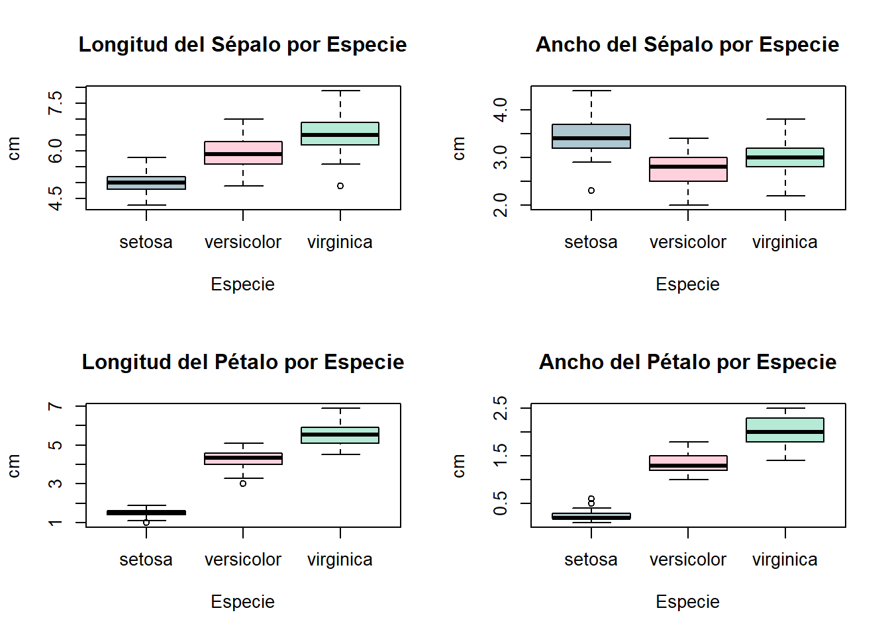

<!DOCTYPE html>
<html xmlns="http://www.w3.org/1999/xhtml" lang="en" xml:lang="en"><head>

<meta charset="utf-8">
<meta name="generator" content="quarto-1.9.37">

<meta name="viewport" content="width=device-width, initial-scale=1.0, user-scalable=yes">

<meta name="author" content="Samuel Solís Barrón">

<title>5&nbsp; MANOVA y MANCOVA – multivariate-statistics</title>
<style>
/* Default styles provided by pandoc.
** See https://pandoc.org/MANUAL.html#variables-for-html for config info.
*/
code{white-space: pre-wrap;}
span.smallcaps{font-variant: small-caps;}
div.columns{display: flex; gap: min(4vw, 1.5em);}
div.column{flex: auto; overflow-x: auto;}
div.hanging-indent{margin-left: 1.5em; text-indent: -1.5em;}
ul.task-list{list-style: none;}
ul.task-list li input[type="checkbox"] {
  width: 0.8em;
  margin: 0 0.8em 0.2em -1em; /* quarto-specific, see https://github.com/quarto-dev/quarto-cli/issues/4556 */ 
  vertical-align: middle;
}
/* CSS for syntax highlighting */
html { -webkit-text-size-adjust: 100%; }
pre > code.sourceCode { white-space: pre; position: relative; }
pre > code.sourceCode > span { display: inline-block; line-height: 1.25; }
pre > code.sourceCode > span:empty { height: 1.2em; }
.sourceCode { overflow: visible; }
code.sourceCode > span { color: inherit; text-decoration: inherit; }
div.sourceCode { margin: 1em 0; }
pre.sourceCode { margin: 0; }
@media screen {
div.sourceCode { overflow: auto; }
}
@media print {
pre > code.sourceCode { white-space: pre-wrap; }
pre > code.sourceCode > span { text-indent: -5em; padding-left: 5em; }
}
pre.numberSource code
  { counter-reset: source-line 0; }
pre.numberSource code > span
  { position: relative; left: -4em; counter-increment: source-line; }
pre.numberSource code > span > a:first-child::before
  { content: counter(source-line);
    position: relative; left: -1em; text-align: right; vertical-align: baseline;
    border: none; display: inline-block;
    -webkit-touch-callout: none; -webkit-user-select: none;
    -khtml-user-select: none; -moz-user-select: none;
    -ms-user-select: none; user-select: none;
    padding: 0 4px; width: 4em;
  }
pre.numberSource { margin-left: 3em;  padding-left: 4px; }
div.sourceCode
  {   }
@media screen {
pre > code.sourceCode > span > a:first-child::before { text-decoration: underline; }
}
</style>


<script src="../site_libs/quarto-nav/quarto-nav.js"></script>
<script src="../site_libs/quarto-nav/headroom.min.js"></script>
<script src="../site_libs/clipboard/clipboard.min.js"></script>
<script src="../site_libs/quarto-search/autocomplete.umd.js"></script>
<script src="../site_libs/quarto-search/fuse.min.js"></script>
<script src="../site_libs/quarto-search/quarto-search.js"></script>
<meta name="quarto:offset" content="../">
<link href="../references.html" rel="next">
<link href="../data-frame/data-frame.html" rel="prev">
<script src="../site_libs/quarto-html/quarto.js" type="module"></script>
<script src="../site_libs/quarto-html/tabsets/tabsets.js" type="module"></script>
<script src="../site_libs/quarto-html/popper.min.js"></script>
<script src="../site_libs/quarto-html/tippy.umd.min.js"></script>
<script src="../site_libs/quarto-html/anchor.min.js"></script>
<link href="../site_libs/quarto-html/tippy.css" rel="stylesheet">
<link href="../site_libs/quarto-html/quarto-syntax-highlighting-7f8f88aac4f3542376d5c11b86a4c14d.css" rel="stylesheet" id="quarto-text-highlighting-styles">
<script src="../site_libs/bootstrap/bootstrap.min.js"></script>
<link href="../site_libs/bootstrap/bootstrap-icons.css" rel="stylesheet">
<link href="../site_libs/bootstrap/bootstrap-9e3e5b9121e68b3f077afb32f2c64d95.min.css" rel="stylesheet" append-hash="true" id="quarto-bootstrap" data-mode="light">
<script id="quarto-search-options" type="application/json">{
  "location": "sidebar",
  "copy-button": false,
  "collapse-after": 3,
  "panel-placement": "start",
  "type": "textbox",
  "limit": 50,
  "keyboard-shortcut": [
    "f",
    "/",
    "s"
  ],
  "show-item-context": false,
  "language": {
    "search-no-results-text": "No results",
    "search-matching-documents-text": "matching documents",
    "search-copy-link-title": "Copy link to search",
    "search-hide-matches-text": "Hide additional matches",
    "search-more-match-text": "more match in this document",
    "search-more-matches-text": "more matches in this document",
    "search-clear-button-title": "Clear",
    "search-text-placeholder": "",
    "search-detached-cancel-button-title": "Cancel",
    "search-submit-button-title": "Submit",
    "search-label": "Search"
  }
}</script>
<link href="../site_libs/htmltools-fill-0.5.9/fill.css" rel="stylesheet">

<script src="../site_libs/htmlwidgets-1.6.4/htmlwidgets.js"></script>

<link href="../site_libs/datatables-css-0.0.0/datatables-crosstalk.css" rel="stylesheet">

<script src="../site_libs/datatables-binding-0.34.0/datatables.js"></script>

<script src="../site_libs/jquery-3.6.0/jquery-3.6.0.min.js"></script>

<link href="../site_libs/dt-core-1.13.6/css/jquery.dataTables.min.css" rel="stylesheet">

<link href="../site_libs/dt-core-1.13.6/css/jquery.dataTables.extra.css" rel="stylesheet">

<script src="../site_libs/dt-core-1.13.6/js/jquery.dataTables.min.js"></script>

<link href="../site_libs/crosstalk-1.2.2/css/crosstalk.min.css" rel="stylesheet">

<script src="../site_libs/crosstalk-1.2.2/js/crosstalk.min.js"></script>


<link rel="stylesheet" href="../styles.css">
</head>

<body class="nav-sidebar floating quarto-light">

<div id="quarto-search-results"></div>
  <header id="quarto-header" class="headroom fixed-top">
  <nav class="quarto-secondary-nav">
    <div class="container-fluid d-flex">
      <button type="button" class="quarto-btn-toggle btn" data-bs-toggle="collapse" role="button" data-bs-target=".quarto-sidebar-collapse-item" aria-controls="quarto-sidebar" aria-expanded="false" aria-label="Toggle sidebar navigation" onclick="if (window.quartoToggleHeadroom) { window.quartoToggleHeadroom(); }">
        <i class="bi bi-layout-text-sidebar-reverse"></i>
      </button>
        <nav class="quarto-page-breadcrumbs" aria-label="breadcrumb"><ol class="breadcrumb"><li class="breadcrumb-item"><a href="../manova/manova.html"><span class="chapter-number">5</span>&nbsp; <span class="chapter-title">MANOVA y MANCOVA</span></a></li></ol></nav>
        <a class="flex-grow-1" role="navigation" data-bs-toggle="collapse" data-bs-target=".quarto-sidebar-collapse-item" aria-controls="quarto-sidebar" aria-expanded="false" aria-label="Toggle sidebar navigation" onclick="if (window.quartoToggleHeadroom) { window.quartoToggleHeadroom(); }">      
        </a>
      <button type="button" class="btn quarto-search-button" aria-label="Search" onclick="window.quartoOpenSearch();">
        <i class="bi bi-search"></i>
      </button>
    </div>
  </nav>
</header>
<!-- content -->
<div id="quarto-content" class="quarto-container page-columns page-rows-contents page-layout-article">
<!-- sidebar -->
  <nav id="quarto-sidebar" class="sidebar collapse collapse-horizontal quarto-sidebar-collapse-item sidebar-navigation floating overflow-auto">
    <div class="pt-lg-2 mt-2 text-left sidebar-header">
    <div class="sidebar-title mb-0 py-0">
      <a href="../">multivariate-statistics</a> 
    </div>
      </div>
        <div class="mt-2 flex-shrink-0 align-items-center">
        <div class="sidebar-search">
        <div id="quarto-search" class="" title="Search"></div>
        </div>
        </div>
    <div class="sidebar-menu-container"> 
    <ul class="list-unstyled mt-1">
        <li class="sidebar-item">
  <div class="sidebar-item-container"> 
  <a href="../index.html" class="sidebar-item-text sidebar-link">
 <span class="menu-text">Preface</span></a>
  </div>
</li>
        <li class="sidebar-item">
  <div class="sidebar-item-container"> 
  <a href="../intro.html" class="sidebar-item-text sidebar-link">
 <span class="menu-text"><span class="chapter-number">1</span>&nbsp; <span class="chapter-title">Introduction</span></span></a>
  </div>
</li>
        <li class="sidebar-item">
  <div class="sidebar-item-container"> 
  <a href="../summary.html" class="sidebar-item-text sidebar-link">
 <span class="menu-text"><span class="chapter-number">2</span>&nbsp; <span class="chapter-title">Summary</span></span></a>
  </div>
</li>
        <li class="sidebar-item">
  <div class="sidebar-item-container"> 
  <a href="../matrix-algebra/matrix-algebra.html" class="sidebar-item-text sidebar-link">
 <span class="menu-text"><span class="chapter-number">3</span>&nbsp; <span class="chapter-title">Matrix Algebra</span></span></a>
  </div>
</li>
        <li class="sidebar-item">
  <div class="sidebar-item-container"> 
  <a href="../data-frame/data-frame.html" class="sidebar-item-text sidebar-link">
 <span class="menu-text"><span class="chapter-number">4</span>&nbsp; <span class="chapter-title">Data Frames</span></span></a>
  </div>
</li>
        <li class="sidebar-item">
  <div class="sidebar-item-container"> 
  <a href="../manova/manova.html" class="sidebar-item-text sidebar-link active">
 <span class="menu-text"><span class="chapter-number">5</span>&nbsp; <span class="chapter-title">MANOVA y MANCOVA</span></span></a>
  </div>
</li>
        <li class="sidebar-item">
  <div class="sidebar-item-container"> 
  <a href="../references.html" class="sidebar-item-text sidebar-link">
 <span class="menu-text">References</span></a>
  </div>
</li>
    </ul>
    </div>
</nav>
<div id="quarto-sidebar-glass" class="quarto-sidebar-collapse-item" data-bs-toggle="collapse" data-bs-target=".quarto-sidebar-collapse-item"></div>
<!-- margin-sidebar -->
    <div id="quarto-margin-sidebar" class="sidebar margin-sidebar">
        <nav id="TOC" role="doc-toc" class="toc-active">
    <h2 id="toc-title">Table of contents</h2>
   
  <ul>
  <li><a href="#objetivo" id="toc-objetivo" class="nav-link active" data-scroll-target="#objetivo"><span class="header-section-number">5.1</span> Objetivo</a></li>
  <li><a href="#datos-utilizados" id="toc-datos-utilizados" class="nav-link" data-scroll-target="#datos-utilizados"><span class="header-section-number">5.2</span> Datos utilizados</a></li>
  <li><a href="#procedimiento" id="toc-procedimiento" class="nav-link" data-scroll-target="#procedimiento"><span class="header-section-number">5.3</span> Procedimiento</a>
  <ul class="collapse">
  <li><a href="#preparación-de-los-datos" id="toc-preparación-de-los-datos" class="nav-link" data-scroll-target="#preparación-de-los-datos"><span class="header-section-number">5.3.1</span> Preparación de los datos</a></li>
  <li><a href="#ajuste-del-modelo-manova-con-cbind" id="toc-ajuste-del-modelo-manova-con-cbind" class="nav-link" data-scroll-target="#ajuste-del-modelo-manova-con-cbind"><span class="header-section-number">5.3.2</span> Ajuste del modelo MANOVA con <code>cbind()</code></a></li>
  <li><a href="#ajuste-del-modelo-manova-sin-cbind" id="toc-ajuste-del-modelo-manova-sin-cbind" class="nav-link" data-scroll-target="#ajuste-del-modelo-manova-sin-cbind"><span class="header-section-number">5.3.3</span> Ajuste del modelo MANOVA sin <code>cbind()</code></a></li>
  <li><a href="#verificación-de-supuestos-del-manova" id="toc-verificación-de-supuestos-del-manova" class="nav-link" data-scroll-target="#verificación-de-supuestos-del-manova"><span class="header-section-number">5.3.4</span> Verificación de supuestos del MANOVA</a></li>
  <li><a href="#pruebas-post-hoc-anovas-individuales" id="toc-pruebas-post-hoc-anovas-individuales" class="nav-link" data-scroll-target="#pruebas-post-hoc-anovas-individuales"><span class="header-section-number">5.3.5</span> Pruebas post-hoc (ANOVAs individuales)</a></li>
  <li><a href="#mancova-incluir-una-covariable-continua" id="toc-mancova-incluir-una-covariable-continua" class="nav-link" data-scroll-target="#mancova-incluir-una-covariable-continua"><span class="header-section-number">5.3.6</span> MANCOVA: incluir una covariable continua</a></li>
  <li><a href="#estadísticos-multivariados-disponibles-en-manova" id="toc-estadísticos-multivariados-disponibles-en-manova" class="nav-link" data-scroll-target="#estadísticos-multivariados-disponibles-en-manova"><span class="header-section-number">5.3.7</span> Estadísticos multivariados disponibles en MANOVA</a></li>
  </ul></li>
  <li><a href="#resultados" id="toc-resultados" class="nav-link" data-scroll-target="#resultados"><span class="header-section-number">5.4</span> Resultados</a></li>
  <li><a href="#problemas-encontrados" id="toc-problemas-encontrados" class="nav-link" data-scroll-target="#problemas-encontrados"><span class="header-section-number">5.5</span> Problemas encontrados</a></li>
  <li><a href="#aprendizaje" id="toc-aprendizaje" class="nav-link" data-scroll-target="#aprendizaje"><span class="header-section-number">5.6</span> Aprendizaje</a></li>
  </ul>
</nav>
    </div>
<!-- main -->
<main class="content" id="quarto-document-content">

<header id="title-block-header" class="quarto-title-block default">
<div class="quarto-title">
<h1 class="title"><span class="chapter-number">5</span>&nbsp; <span class="chapter-title">MANOVA y MANCOVA</span></h1>
<p class="subtitle lead">MANOVA (Análisis Multivariado de Varianza) y MANCOVA (Análisis Multivariado de Covarianza)</p>
</div>


<div class="quarto-title-meta">

    <div>
    <div class="quarto-title-meta-heading">Author</div>
    <div class="quarto-title-meta-contents">
             <p>Samuel Solís Barrón </p>
          </div>
  </div>
    
  
    
  </div>
  


</header>


<section id="objetivo" class="level2" data-number="5.1">
<h2 data-number="5.1" class="anchored" data-anchor-id="objetivo"><span class="header-section-number">5.1</span> Objetivo</h2>
<p>Comparar los vectores de medias de medias de <strong>tres o más grupos</strong> de manera simultánea, considerando múltiples variables de respuesta al mismo tiempo.</p>
</section>
<section id="datos-utilizados" class="level2" data-number="5.2">
<h2 data-number="5.2" class="anchored" data-anchor-id="datos-utilizados"><span class="header-section-number">5.2</span> Datos utilizados</h2>
<div class="tabset-margin-container"></div><div class="panel-tabset">
<ul class="nav nav-tabs" role="tablist"><li class="nav-item" role="presentation"><a class="nav-link active" id="tabset-1-1-tab" data-bs-toggle="tab" data-bs-target="#tabset-1-1" role="tab" aria-controls="tabset-1-1" aria-selected="true" href="">Descripción general</a></li><li class="nav-item" role="presentation"><a class="nav-link" id="tabset-1-2-tab" data-bs-toggle="tab" data-bs-target="#tabset-1-2" role="tab" aria-controls="tabset-1-2" aria-selected="false" href="">Código R</a></li><li class="nav-item" role="presentation"><a class="nav-link" id="tabset-1-3-tab" data-bs-toggle="tab" data-bs-target="#tabset-1-3" role="tab" aria-controls="tabset-1-3" aria-selected="false" href="">iris</a></li></ul>
<div class="tab-content">
<div id="tabset-1-1" class="tab-pane active" role="tabpanel" aria-labelledby="tabset-1-1-tab">
<p>La base de datos utilizó <code>iris</code> incluida en R. Proviene de las observaciones de Ronal Fisher (1936) del género <em>Iris</em>. La variable categórica es la <code>Species</code> (setosa, versicolor y virginica) y la variable de repsuesta contiene <code>Sepal.Length</code> (longitud de sépalo), <code>Sepal.Width</code> (ancho de sépalo), <code>Petal.Length</code> (longitud de pétalo) y <code>Petal.Width</code> (ancho de pétalo).</p>
</div>
<div id="tabset-1-2" class="tab-pane" role="tabpanel" aria-labelledby="tabset-1-2-tab">
<p>El código para cargar las bases de datos es el siguiente:</p>
<div class="cell">
<div class="code-copy-outer-scaffold"><div class="sourceCode cell-code" id="cb1"><pre class="sourceCode r code-with-copy"><code class="sourceCode r"><span id="cb1-1"><a href="#cb1-1" aria-hidden="true" tabindex="-1"></a><span class="co">#| echo: true</span></span>
<span id="cb1-2"><a href="#cb1-2" aria-hidden="true" tabindex="-1"></a><span class="co">#| eval: false</span></span>
<span id="cb1-3"><a href="#cb1-3" aria-hidden="true" tabindex="-1"></a></span>
<span id="cb1-4"><a href="#cb1-4" aria-hidden="true" tabindex="-1"></a><span class="fu">data</span>(iris)            <span class="co"># Carga iris desde R base. No requiere paquetes adicionales.</span></span>
<span id="cb1-5"><a href="#cb1-5" aria-hidden="true" tabindex="-1"></a>iris1 <span class="ot">&lt;-</span> iris[, <span class="dv">1</span><span class="sc">:</span><span class="dv">4</span>]  <span class="co"># Selecciona solo las 4 columnas numéricas (excluye Species).</span></span>
<span id="cb1-6"><a href="#cb1-6" aria-hidden="true" tabindex="-1"></a>DT<span class="sc">::</span><span class="fu">datatable</span>(iris1)  <span class="co"># Tabla interactiva con búsqueda, orden y paginación.</span></span></code></pre></div><button title="Copy to Clipboard" class="code-copy-button"><i class="bi"></i></button></div>
<div class="cell-output-display">
<div class="datatables html-widget html-fill-item" id="htmlwidget-7c45410b8d839203e306" style="width:100%;height:auto;"></div>
<script type="application/json" data-for="htmlwidget-7c45410b8d839203e306">{"x":{"filter":"none","vertical":false,"data":[["1","2","3","4","5","6","7","8","9","10","11","12","13","14","15","16","17","18","19","20","21","22","23","24","25","26","27","28","29","30","31","32","33","34","35","36","37","38","39","40","41","42","43","44","45","46","47","48","49","50","51","52","53","54","55","56","57","58","59","60","61","62","63","64","65","66","67","68","69","70","71","72","73","74","75","76","77","78","79","80","81","82","83","84","85","86","87","88","89","90","91","92","93","94","95","96","97","98","99","100","101","102","103","104","105","106","107","108","109","110","111","112","113","114","115","116","117","118","119","120","121","122","123","124","125","126","127","128","129","130","131","132","133","134","135","136","137","138","139","140","141","142","143","144","145","146","147","148","149","150"],[5.1,4.9,4.7,4.6,5,5.4,4.6,5,4.4,4.9,5.4,4.8,4.8,4.3,5.8,5.7,5.4,5.1,5.7,5.1,5.4,5.1,4.6,5.1,4.8,5,5,5.2,5.2,4.7,4.8,5.4,5.2,5.5,4.9,5,5.5,4.9,4.4,5.1,5,4.5,4.4,5,5.1,4.8,5.1,4.6,5.3,5,7,6.4,6.9,5.5,6.5,5.7,6.3,4.9,6.6,5.2,5,5.9,6,6.1,5.6,6.7,5.6,5.8,6.2,5.6,5.9,6.1,6.3,6.1,6.4,6.6,6.8,6.7,6,5.7,5.5,5.5,5.8,6,5.4,6,6.7,6.3,5.6,5.5,5.5,6.1,5.8,5,5.6,5.7,5.7,6.2,5.1,5.7,6.3,5.8,7.1,6.3,6.5,7.6,4.9,7.3,6.7,7.2,6.5,6.4,6.8,5.7,5.8,6.4,6.5,7.7,7.7,6,6.9,5.6,7.7,6.3,6.7,7.2,6.2,6.1,6.4,7.2,7.4,7.9,6.4,6.3,6.1,7.7,6.3,6.4,6,6.9,6.7,6.9,5.8,6.8,6.7,6.7,6.3,6.5,6.2,5.9],[3.5,3,3.2,3.1,3.6,3.9,3.4,3.4,2.9,3.1,3.7,3.4,3,3,4,4.4,3.9,3.5,3.8,3.8,3.4,3.7,3.6,3.3,3.4,3,3.4,3.5,3.4,3.2,3.1,3.4,4.1,4.2,3.1,3.2,3.5,3.6,3,3.4,3.5,2.3,3.2,3.5,3.8,3,3.8,3.2,3.7,3.3,3.2,3.2,3.1,2.3,2.8,2.8,3.3,2.4,2.9,2.7,2,3,2.2,2.9,2.9,3.1,3,2.7,2.2,2.5,3.2,2.8,2.5,2.8,2.9,3,2.8,3,2.9,2.6,2.4,2.4,2.7,2.7,3,3.4,3.1,2.3,3,2.5,2.6,3,2.6,2.3,2.7,3,2.9,2.9,2.5,2.8,3.3,2.7,3,2.9,3,3,2.5,2.9,2.5,3.6,3.2,2.7,3,2.5,2.8,3.2,3,3.8,2.6,2.2,3.2,2.8,2.8,2.7,3.3,3.2,2.8,3,2.8,3,2.8,3.8,2.8,2.8,2.6,3,3.4,3.1,3,3.1,3.1,3.1,2.7,3.2,3.3,3,2.5,3,3.4,3],[1.4,1.4,1.3,1.5,1.4,1.7,1.4,1.5,1.4,1.5,1.5,1.6,1.4,1.1,1.2,1.5,1.3,1.4,1.7,1.5,1.7,1.5,1,1.7,1.9,1.6,1.6,1.5,1.4,1.6,1.6,1.5,1.5,1.4,1.5,1.2,1.3,1.4,1.3,1.5,1.3,1.3,1.3,1.6,1.9,1.4,1.6,1.4,1.5,1.4,4.7,4.5,4.9,4,4.6,4.5,4.7,3.3,4.6,3.9,3.5,4.2,4,4.7,3.6,4.4,4.5,4.1,4.5,3.9,4.8,4,4.9,4.7,4.3,4.4,4.8,5,4.5,3.5,3.8,3.7,3.9,5.1,4.5,4.5,4.7,4.4,4.1,4,4.4,4.6,4,3.3,4.2,4.2,4.2,4.3,3,4.1,6,5.1,5.9,5.6,5.8,6.6,4.5,6.3,5.8,6.1,5.1,5.3,5.5,5,5.1,5.3,5.5,6.7,6.9,5,5.7,4.9,6.7,4.9,5.7,6,4.8,4.9,5.6,5.8,6.1,6.4,5.6,5.1,5.6,6.1,5.6,5.5,4.8,5.4,5.6,5.1,5.1,5.9,5.7,5.2,5,5.2,5.4,5.1],[0.2,0.2,0.2,0.2,0.2,0.4,0.3,0.2,0.2,0.1,0.2,0.2,0.1,0.1,0.2,0.4,0.4,0.3,0.3,0.3,0.2,0.4,0.2,0.5,0.2,0.2,0.4,0.2,0.2,0.2,0.2,0.4,0.1,0.2,0.2,0.2,0.2,0.1,0.2,0.2,0.3,0.3,0.2,0.6,0.4,0.3,0.2,0.2,0.2,0.2,1.4,1.5,1.5,1.3,1.5,1.3,1.6,1,1.3,1.4,1,1.5,1,1.4,1.3,1.4,1.5,1,1.5,1.1,1.8,1.3,1.5,1.2,1.3,1.4,1.4,1.7,1.5,1,1.1,1,1.2,1.6,1.5,1.6,1.5,1.3,1.3,1.3,1.2,1.4,1.2,1,1.3,1.2,1.3,1.3,1.1,1.3,2.5,1.9,2.1,1.8,2.2,2.1,1.7,1.8,1.8,2.5,2,1.9,2.1,2,2.4,2.3,1.8,2.2,2.3,1.5,2.3,2,2,1.8,2.1,1.8,1.8,1.8,2.1,1.6,1.9,2,2.2,1.5,1.4,2.3,2.4,1.8,1.8,2.1,2.4,2.3,1.9,2.3,2.5,2.3,1.9,2,2.3,1.8]],"container":"<table class=\"display\">\n  <thead>\n    <tr>\n      <th> <\/th>\n      <th>Sepal.Length<\/th>\n      <th>Sepal.Width<\/th>\n      <th>Petal.Length<\/th>\n      <th>Petal.Width<\/th>\n    <\/tr>\n  <\/thead>\n<\/table>","options":{"columnDefs":[{"className":"dt-right","targets":[1,2,3,4]},{"orderable":false,"targets":0},{"name":" ","targets":0},{"name":"Sepal.Length","targets":1},{"name":"Sepal.Width","targets":2},{"name":"Petal.Length","targets":3},{"name":"Petal.Width","targets":4}],"order":[],"autoWidth":false,"orderClasses":false}},"evals":[],"jsHooks":[]}</script>
</div>
<div class="code-copy-outer-scaffold"><div class="sourceCode cell-code" id="cb2"><pre class="sourceCode r code-with-copy"><code class="sourceCode r"><span id="cb2-1"><a href="#cb2-1" aria-hidden="true" tabindex="-1"></a>                      <span class="co"># Muestra 10 filas por página.</span></span></code></pre></div><button title="Copy to Clipboard" class="code-copy-button"><i class="bi"></i></button></div>
</div>
</div>
<div id="tabset-1-3" class="tab-pane" role="tabpanel" aria-labelledby="tabset-1-3-tab">
<div class="cell">
<div class="code-copy-outer-scaffold"><div class="sourceCode cell-code" id="cb3"><pre class="sourceCode r code-with-copy"><code class="sourceCode r"><span id="cb3-1"><a href="#cb3-1" aria-hidden="true" tabindex="-1"></a><span class="co">#| echo: false</span></span>
<span id="cb3-2"><a href="#cb3-2" aria-hidden="true" tabindex="-1"></a><span class="co">#| eval: true</span></span>
<span id="cb3-3"><a href="#cb3-3" aria-hidden="true" tabindex="-1"></a></span>
<span id="cb3-4"><a href="#cb3-4" aria-hidden="true" tabindex="-1"></a><span class="fu">data</span>(iris)            <span class="co"># Carga iris desde R base. No requiere paquetes adicionales.</span></span>
<span id="cb3-5"><a href="#cb3-5" aria-hidden="true" tabindex="-1"></a>iris1 <span class="ot">&lt;-</span> iris[, <span class="dv">1</span><span class="sc">:</span><span class="dv">4</span>]  <span class="co"># Selecciona solo las 4 columnas numéricas (excluye Species).</span></span>
<span id="cb3-6"><a href="#cb3-6" aria-hidden="true" tabindex="-1"></a>DT<span class="sc">::</span><span class="fu">datatable</span>(iris1)</span></code></pre></div><button title="Copy to Clipboard" class="code-copy-button"><i class="bi"></i></button></div>
<div class="cell-output-display">
<div class="datatables html-widget html-fill-item" id="htmlwidget-b70468e3ba57bf875e24" style="width:100%;height:auto;"></div>
<script type="application/json" data-for="htmlwidget-b70468e3ba57bf875e24">{"x":{"filter":"none","vertical":false,"data":[["1","2","3","4","5","6","7","8","9","10","11","12","13","14","15","16","17","18","19","20","21","22","23","24","25","26","27","28","29","30","31","32","33","34","35","36","37","38","39","40","41","42","43","44","45","46","47","48","49","50","51","52","53","54","55","56","57","58","59","60","61","62","63","64","65","66","67","68","69","70","71","72","73","74","75","76","77","78","79","80","81","82","83","84","85","86","87","88","89","90","91","92","93","94","95","96","97","98","99","100","101","102","103","104","105","106","107","108","109","110","111","112","113","114","115","116","117","118","119","120","121","122","123","124","125","126","127","128","129","130","131","132","133","134","135","136","137","138","139","140","141","142","143","144","145","146","147","148","149","150"],[5.1,4.9,4.7,4.6,5,5.4,4.6,5,4.4,4.9,5.4,4.8,4.8,4.3,5.8,5.7,5.4,5.1,5.7,5.1,5.4,5.1,4.6,5.1,4.8,5,5,5.2,5.2,4.7,4.8,5.4,5.2,5.5,4.9,5,5.5,4.9,4.4,5.1,5,4.5,4.4,5,5.1,4.8,5.1,4.6,5.3,5,7,6.4,6.9,5.5,6.5,5.7,6.3,4.9,6.6,5.2,5,5.9,6,6.1,5.6,6.7,5.6,5.8,6.2,5.6,5.9,6.1,6.3,6.1,6.4,6.6,6.8,6.7,6,5.7,5.5,5.5,5.8,6,5.4,6,6.7,6.3,5.6,5.5,5.5,6.1,5.8,5,5.6,5.7,5.7,6.2,5.1,5.7,6.3,5.8,7.1,6.3,6.5,7.6,4.9,7.3,6.7,7.2,6.5,6.4,6.8,5.7,5.8,6.4,6.5,7.7,7.7,6,6.9,5.6,7.7,6.3,6.7,7.2,6.2,6.1,6.4,7.2,7.4,7.9,6.4,6.3,6.1,7.7,6.3,6.4,6,6.9,6.7,6.9,5.8,6.8,6.7,6.7,6.3,6.5,6.2,5.9],[3.5,3,3.2,3.1,3.6,3.9,3.4,3.4,2.9,3.1,3.7,3.4,3,3,4,4.4,3.9,3.5,3.8,3.8,3.4,3.7,3.6,3.3,3.4,3,3.4,3.5,3.4,3.2,3.1,3.4,4.1,4.2,3.1,3.2,3.5,3.6,3,3.4,3.5,2.3,3.2,3.5,3.8,3,3.8,3.2,3.7,3.3,3.2,3.2,3.1,2.3,2.8,2.8,3.3,2.4,2.9,2.7,2,3,2.2,2.9,2.9,3.1,3,2.7,2.2,2.5,3.2,2.8,2.5,2.8,2.9,3,2.8,3,2.9,2.6,2.4,2.4,2.7,2.7,3,3.4,3.1,2.3,3,2.5,2.6,3,2.6,2.3,2.7,3,2.9,2.9,2.5,2.8,3.3,2.7,3,2.9,3,3,2.5,2.9,2.5,3.6,3.2,2.7,3,2.5,2.8,3.2,3,3.8,2.6,2.2,3.2,2.8,2.8,2.7,3.3,3.2,2.8,3,2.8,3,2.8,3.8,2.8,2.8,2.6,3,3.4,3.1,3,3.1,3.1,3.1,2.7,3.2,3.3,3,2.5,3,3.4,3],[1.4,1.4,1.3,1.5,1.4,1.7,1.4,1.5,1.4,1.5,1.5,1.6,1.4,1.1,1.2,1.5,1.3,1.4,1.7,1.5,1.7,1.5,1,1.7,1.9,1.6,1.6,1.5,1.4,1.6,1.6,1.5,1.5,1.4,1.5,1.2,1.3,1.4,1.3,1.5,1.3,1.3,1.3,1.6,1.9,1.4,1.6,1.4,1.5,1.4,4.7,4.5,4.9,4,4.6,4.5,4.7,3.3,4.6,3.9,3.5,4.2,4,4.7,3.6,4.4,4.5,4.1,4.5,3.9,4.8,4,4.9,4.7,4.3,4.4,4.8,5,4.5,3.5,3.8,3.7,3.9,5.1,4.5,4.5,4.7,4.4,4.1,4,4.4,4.6,4,3.3,4.2,4.2,4.2,4.3,3,4.1,6,5.1,5.9,5.6,5.8,6.6,4.5,6.3,5.8,6.1,5.1,5.3,5.5,5,5.1,5.3,5.5,6.7,6.9,5,5.7,4.9,6.7,4.9,5.7,6,4.8,4.9,5.6,5.8,6.1,6.4,5.6,5.1,5.6,6.1,5.6,5.5,4.8,5.4,5.6,5.1,5.1,5.9,5.7,5.2,5,5.2,5.4,5.1],[0.2,0.2,0.2,0.2,0.2,0.4,0.3,0.2,0.2,0.1,0.2,0.2,0.1,0.1,0.2,0.4,0.4,0.3,0.3,0.3,0.2,0.4,0.2,0.5,0.2,0.2,0.4,0.2,0.2,0.2,0.2,0.4,0.1,0.2,0.2,0.2,0.2,0.1,0.2,0.2,0.3,0.3,0.2,0.6,0.4,0.3,0.2,0.2,0.2,0.2,1.4,1.5,1.5,1.3,1.5,1.3,1.6,1,1.3,1.4,1,1.5,1,1.4,1.3,1.4,1.5,1,1.5,1.1,1.8,1.3,1.5,1.2,1.3,1.4,1.4,1.7,1.5,1,1.1,1,1.2,1.6,1.5,1.6,1.5,1.3,1.3,1.3,1.2,1.4,1.2,1,1.3,1.2,1.3,1.3,1.1,1.3,2.5,1.9,2.1,1.8,2.2,2.1,1.7,1.8,1.8,2.5,2,1.9,2.1,2,2.4,2.3,1.8,2.2,2.3,1.5,2.3,2,2,1.8,2.1,1.8,1.8,1.8,2.1,1.6,1.9,2,2.2,1.5,1.4,2.3,2.4,1.8,1.8,2.1,2.4,2.3,1.9,2.3,2.5,2.3,1.9,2,2.3,1.8]],"container":"<table class=\"display\">\n  <thead>\n    <tr>\n      <th> <\/th>\n      <th>Sepal.Length<\/th>\n      <th>Sepal.Width<\/th>\n      <th>Petal.Length<\/th>\n      <th>Petal.Width<\/th>\n    <\/tr>\n  <\/thead>\n<\/table>","options":{"columnDefs":[{"className":"dt-right","targets":[1,2,3,4]},{"orderable":false,"targets":0},{"name":" ","targets":0},{"name":"Sepal.Length","targets":1},{"name":"Sepal.Width","targets":2},{"name":"Petal.Length","targets":3},{"name":"Petal.Width","targets":4}],"order":[],"autoWidth":false,"orderClasses":false}},"evals":[],"jsHooks":[]}</script>
</div>
</div>
</div>
</div>
</div>
</section>
<section id="procedimiento" class="level2" data-number="5.3">
<h2 data-number="5.3" class="anchored" data-anchor-id="procedimiento"><span class="header-section-number">5.3</span> Procedimiento</h2>
<section id="preparación-de-los-datos" class="level3" data-number="5.3.1">
<h3 data-number="5.3.1" class="anchored" data-anchor-id="preparación-de-los-datos"><span class="header-section-number">5.3.1</span> Preparación de los datos</h3>
<div class="cell">
<div class="code-copy-outer-scaffold"><div class="sourceCode cell-code" id="cb4"><pre class="sourceCode r code-with-copy"><code class="sourceCode r"><span id="cb4-1"><a href="#cb4-1" aria-hidden="true" tabindex="-1"></a><span class="co">#| echo: true</span></span>
<span id="cb4-2"><a href="#cb4-2" aria-hidden="true" tabindex="-1"></a></span>
<span id="cb4-3"><a href="#cb4-3" aria-hidden="true" tabindex="-1"></a></span>
<span id="cb4-4"><a href="#cb4-4" aria-hidden="true" tabindex="-1"></a><span class="co"># La función attach() hace que las columnas del dataset estén disponibles</span></span>
<span id="cb4-5"><a href="#cb4-5" aria-hidden="true" tabindex="-1"></a><span class="co"># directamente en el espacio de trabajo, sin necesidad de usar el operador $</span></span>
<span id="cb4-6"><a href="#cb4-6" aria-hidden="true" tabindex="-1"></a><span class="co"># Por ejemplo, podemos escribir Sepal.Length en lugar de iris$Sepal.Length</span></span>
<span id="cb4-7"><a href="#cb4-7" aria-hidden="true" tabindex="-1"></a></span>
<span id="cb4-8"><a href="#cb4-8" aria-hidden="true" tabindex="-1"></a><span class="fu">attach</span>(iris)</span></code></pre></div><button title="Copy to Clipboard" class="code-copy-button"><i class="bi"></i></button></div>
</div>
<div class="cell">
<div class="code-copy-outer-scaffold"><div class="sourceCode cell-code" id="cb5"><pre class="sourceCode r code-with-copy"><code class="sourceCode r"><span id="cb5-1"><a href="#cb5-1" aria-hidden="true" tabindex="-1"></a><span class="co">#| echo: true</span></span>
<span id="cb5-2"><a href="#cb5-2" aria-hidden="true" tabindex="-1"></a></span>
<span id="cb5-3"><a href="#cb5-3" aria-hidden="true" tabindex="-1"></a><span class="co"># cbind() combina vectores por columnas para formar una matriz de respuesta.</span></span>
<span id="cb5-4"><a href="#cb5-4" aria-hidden="true" tabindex="-1"></a><span class="co"># En MANOVA, la variable de respuesta es una MATRIZ (Y), no un solo vector.</span></span>
<span id="cb5-5"><a href="#cb5-5" aria-hidden="true" tabindex="-1"></a><span class="co"># Aquí agrupamos las cuatro variables morfológicas en una sola matriz Y.</span></span>
<span id="cb5-6"><a href="#cb5-6" aria-hidden="true" tabindex="-1"></a></span>
<span id="cb5-7"><a href="#cb5-7" aria-hidden="true" tabindex="-1"></a>Y_respuesta <span class="ot">&lt;-</span> <span class="fu">cbind</span>(Sepal.Length, Sepal.Width, Petal.Length, Petal.Width)</span></code></pre></div><button title="Copy to Clipboard" class="code-copy-button"><i class="bi"></i></button></div>
</div>
</section>
<section id="ajuste-del-modelo-manova-con-cbind" class="level3" data-number="5.3.2">
<h3 data-number="5.3.2" class="anchored" data-anchor-id="ajuste-del-modelo-manova-con-cbind"><span class="header-section-number">5.3.2</span> Ajuste del modelo MANOVA con <code>cbind()</code></h3>
<div class="cell">
<div class="code-copy-outer-scaffold"><div class="sourceCode cell-code" id="cb6"><pre class="sourceCode r code-with-copy"><code class="sourceCode r"><span id="cb6-1"><a href="#cb6-1" aria-hidden="true" tabindex="-1"></a><span class="co">#| echo: true</span></span>
<span id="cb6-2"><a href="#cb6-2" aria-hidden="true" tabindex="-1"></a></span>
<span id="cb6-3"><a href="#cb6-3" aria-hidden="true" tabindex="-1"></a><span class="co"># manova() ajusta el modelo multivariado de varianza.</span></span>
<span id="cb6-4"><a href="#cb6-4" aria-hidden="true" tabindex="-1"></a><span class="co"># La fórmula Y_respuesta ~ Species indica que queremos explicar la</span></span>
<span id="cb6-5"><a href="#cb6-5" aria-hidden="true" tabindex="-1"></a><span class="co"># variación en las cuatro variables morfológicas en función de la especie.</span></span>
<span id="cb6-6"><a href="#cb6-6" aria-hidden="true" tabindex="-1"></a></span>
<span id="cb6-7"><a href="#cb6-7" aria-hidden="true" tabindex="-1"></a>fit <span class="ot">&lt;-</span> <span class="fu">manova</span>(Y_respuesta <span class="sc">~</span> Species, <span class="at">data =</span> iris)</span></code></pre></div><button title="Copy to Clipboard" class="code-copy-button"><i class="bi"></i></button></div>
</div>
<div class="cell">
<div class="code-copy-outer-scaffold"><div class="sourceCode cell-code" id="cb7"><pre class="sourceCode r code-with-copy"><code class="sourceCode r"><span id="cb7-1"><a href="#cb7-1" aria-hidden="true" tabindex="-1"></a><span class="co">#| echo: true</span></span>
<span id="cb7-2"><a href="#cb7-2" aria-hidden="true" tabindex="-1"></a></span>
<span id="cb7-3"><a href="#cb7-3" aria-hidden="true" tabindex="-1"></a><span class="co"># summary.manova() muestra la tabla MANOVA con el estadístico de Wilks' Lambda</span></span>
<span id="cb7-4"><a href="#cb7-4" aria-hidden="true" tabindex="-1"></a><span class="co"># (por defecto), junto con el valor F aproximado y el valor p.</span></span>
<span id="cb7-5"><a href="#cb7-5" aria-hidden="true" tabindex="-1"></a><span class="co"># Si el valor p &lt; 0.05, rechazamos Ho: los vectores de medias son iguales.</span></span>
<span id="cb7-6"><a href="#cb7-6" aria-hidden="true" tabindex="-1"></a></span>
<span id="cb7-7"><a href="#cb7-7" aria-hidden="true" tabindex="-1"></a><span class="fu">summary.manova</span>(fit)</span></code></pre></div><button title="Copy to Clipboard" class="code-copy-button"><i class="bi"></i></button></div>
<div class="cell-output cell-output-stdout">
<pre><code>           Df Pillai approx F num Df den Df    Pr(&gt;F)    
Species     2 1.1919   53.466      8    290 &lt; 2.2e-16 ***
Residuals 147                                            
---
Signif. codes:  0 '***' 0.001 '**' 0.01 '*' 0.05 '.' 0.1 ' ' 1</code></pre>
</div>
</div>
<div class="cell">
<div class="code-copy-outer-scaffold"><div class="sourceCode cell-code" id="cb9"><pre class="sourceCode r code-with-copy"><code class="sourceCode r"><span id="cb9-1"><a href="#cb9-1" aria-hidden="true" tabindex="-1"></a><span class="co">#| echo: true</span></span>
<span id="cb9-2"><a href="#cb9-2" aria-hidden="true" tabindex="-1"></a></span>
<span id="cb9-3"><a href="#cb9-3" aria-hidden="true" tabindex="-1"></a><span class="co"># summary.aov() realiza las pruebas post-hoc del MANOVA.</span></span>
<span id="cb9-4"><a href="#cb9-4" aria-hidden="true" tabindex="-1"></a><span class="co"># Una vez que el MANOVA detecta diferencias significativas, se hacen ANOVAs</span></span>
<span id="cb9-5"><a href="#cb9-5" aria-hidden="true" tabindex="-1"></a><span class="co"># individuales por cada variable de respuesta para saber cuáles generan</span></span>
<span id="cb9-6"><a href="#cb9-6" aria-hidden="true" tabindex="-1"></a><span class="co"># la diferencia observada entre grupos.</span></span>
<span id="cb9-7"><a href="#cb9-7" aria-hidden="true" tabindex="-1"></a></span>
<span id="cb9-8"><a href="#cb9-8" aria-hidden="true" tabindex="-1"></a><span class="fu">summary.aov</span>(fit)</span></code></pre></div><button title="Copy to Clipboard" class="code-copy-button"><i class="bi"></i></button></div>
<div class="cell-output cell-output-stdout">
<pre><code> Response Sepal.Length :
             Df Sum Sq Mean Sq F value    Pr(&gt;F)    
Species       2 63.212  31.606  119.26 &lt; 2.2e-16 ***
Residuals   147 38.956   0.265                      
---
Signif. codes:  0 '***' 0.001 '**' 0.01 '*' 0.05 '.' 0.1 ' ' 1

 Response Sepal.Width :
             Df Sum Sq Mean Sq F value    Pr(&gt;F)    
Species       2 11.345  5.6725   49.16 &lt; 2.2e-16 ***
Residuals   147 16.962  0.1154                      
---
Signif. codes:  0 '***' 0.001 '**' 0.01 '*' 0.05 '.' 0.1 ' ' 1

 Response Petal.Length :
             Df Sum Sq Mean Sq F value    Pr(&gt;F)    
Species       2 437.10 218.551  1180.2 &lt; 2.2e-16 ***
Residuals   147  27.22   0.185                      
---
Signif. codes:  0 '***' 0.001 '**' 0.01 '*' 0.05 '.' 0.1 ' ' 1

 Response Petal.Width :
             Df Sum Sq Mean Sq F value    Pr(&gt;F)    
Species       2 80.413  40.207  960.01 &lt; 2.2e-16 ***
Residuals   147  6.157   0.042                      
---
Signif. codes:  0 '***' 0.001 '**' 0.01 '*' 0.05 '.' 0.1 ' ' 1</code></pre>
</div>
</div>
<div class="cell">
<div class="code-copy-outer-scaffold"><div class="sourceCode cell-code" id="cb11"><pre class="sourceCode r code-with-copy"><code class="sourceCode r"><span id="cb11-1"><a href="#cb11-1" aria-hidden="true" tabindex="-1"></a><span class="co">#| echo: true</span></span>
<span id="cb11-2"><a href="#cb11-2" aria-hidden="true" tabindex="-1"></a></span>
<span id="cb11-3"><a href="#cb11-3" aria-hidden="true" tabindex="-1"></a><span class="co"># detach() revierte el efecto de attach(), eliminando las columnas del</span></span>
<span id="cb11-4"><a href="#cb11-4" aria-hidden="true" tabindex="-1"></a><span class="co"># espacio de trabajo. Es buena práctica usarlo para evitar conflictos de</span></span>
<span id="cb11-5"><a href="#cb11-5" aria-hidden="true" tabindex="-1"></a><span class="co"># nombres entre objetos del entorno y columnas del dataset.</span></span>
<span id="cb11-6"><a href="#cb11-6" aria-hidden="true" tabindex="-1"></a></span>
<span id="cb11-7"><a href="#cb11-7" aria-hidden="true" tabindex="-1"></a><span class="fu">detach</span>(iris)</span></code></pre></div><button title="Copy to Clipboard" class="code-copy-button"><i class="bi"></i></button></div>
</div>
</section>
<section id="ajuste-del-modelo-manova-sin-cbind" class="level3" data-number="5.3.3">
<h3 data-number="5.3.3" class="anchored" data-anchor-id="ajuste-del-modelo-manova-sin-cbind"><span class="header-section-number">5.3.3</span> Ajuste del modelo MANOVA sin <code>cbind()</code></h3>
<div class="cell">
<div class="code-copy-outer-scaffold"><div class="sourceCode cell-code" id="cb12"><pre class="sourceCode r code-with-copy"><code class="sourceCode r"><span id="cb12-1"><a href="#cb12-1" aria-hidden="true" tabindex="-1"></a><span class="co">#| echo: true</span></span>
<span id="cb12-2"><a href="#cb12-2" aria-hidden="true" tabindex="-1"></a></span>
<span id="cb12-3"><a href="#cb12-3" aria-hidden="true" tabindex="-1"></a><span class="co"># Otra forma de especificar la matriz de respuesta es usando as.matrix()</span></span>
<span id="cb12-4"><a href="#cb12-4" aria-hidden="true" tabindex="-1"></a><span class="co"># directamente dentro de la fórmula, seleccionando columnas por índice.</span></span>
<span id="cb12-5"><a href="#cb12-5" aria-hidden="true" tabindex="-1"></a><span class="co"># iris[, 1:3] toma las primeras tres columnas numéricas del dataset.</span></span>
<span id="cb12-6"><a href="#cb12-6" aria-hidden="true" tabindex="-1"></a><span class="co"># Este enfoque es útil cuando no queremos usar attach().</span></span>
<span id="cb12-7"><a href="#cb12-7" aria-hidden="true" tabindex="-1"></a></span>
<span id="cb12-8"><a href="#cb12-8" aria-hidden="true" tabindex="-1"></a>fit1 <span class="ot">&lt;-</span> <span class="fu">manova</span>(<span class="fu">as.matrix</span>(iris[, <span class="dv">1</span><span class="sc">:</span><span class="dv">3</span>]) <span class="sc">~</span> Species, <span class="at">data =</span> iris)</span></code></pre></div><button title="Copy to Clipboard" class="code-copy-button"><i class="bi"></i></button></div>
</div>
<div class="cell">
<div class="code-copy-outer-scaffold"><div class="sourceCode cell-code" id="cb13"><pre class="sourceCode r code-with-copy"><code class="sourceCode r"><span id="cb13-1"><a href="#cb13-1" aria-hidden="true" tabindex="-1"></a><span class="co">#| echo: true</span></span>
<span id="cb13-2"><a href="#cb13-2" aria-hidden="true" tabindex="-1"></a></span>
<span id="cb13-3"><a href="#cb13-3" aria-hidden="true" tabindex="-1"></a><span class="co"># Revisamos el resultado del modelo con solo tres variables de respuesta.</span></span>
<span id="cb13-4"><a href="#cb13-4" aria-hidden="true" tabindex="-1"></a><span class="co"># La interpretación es la misma: buscamos si el p-value &lt; 0.05.</span></span>
<span id="cb13-5"><a href="#cb13-5" aria-hidden="true" tabindex="-1"></a></span>
<span id="cb13-6"><a href="#cb13-6" aria-hidden="true" tabindex="-1"></a><span class="fu">summary.manova</span>(fit1)</span></code></pre></div><button title="Copy to Clipboard" class="code-copy-button"><i class="bi"></i></button></div>
<div class="cell-output cell-output-stdout">
<pre><code>           Df Pillai approx F num Df den Df    Pr(&gt;F)    
Species     2 1.1325   63.532      6    292 &lt; 2.2e-16 ***
Residuals 147                                            
---
Signif. codes:  0 '***' 0.001 '**' 0.01 '*' 0.05 '.' 0.1 ' ' 1</code></pre>
</div>
</div>
<div class="cell">
<div class="code-copy-outer-scaffold"><div class="sourceCode cell-code" id="cb15"><pre class="sourceCode r code-with-copy"><code class="sourceCode r"><span id="cb15-1"><a href="#cb15-1" aria-hidden="true" tabindex="-1"></a><span class="co">#| echo: true</span></span>
<span id="cb15-2"><a href="#cb15-2" aria-hidden="true" tabindex="-1"></a></span>
<span id="cb15-3"><a href="#cb15-3" aria-hidden="true" tabindex="-1"></a><span class="co"># Post-hoc para el segundo modelo: ANOVAs individuales sobre</span></span>
<span id="cb15-4"><a href="#cb15-4" aria-hidden="true" tabindex="-1"></a><span class="co"># las tres variables de respuesta incluidas.</span></span>
<span id="cb15-5"><a href="#cb15-5" aria-hidden="true" tabindex="-1"></a></span>
<span id="cb15-6"><a href="#cb15-6" aria-hidden="true" tabindex="-1"></a><span class="fu">summary.aov</span>(fit1)</span></code></pre></div><button title="Copy to Clipboard" class="code-copy-button"><i class="bi"></i></button></div>
<div class="cell-output cell-output-stdout">
<pre><code> Response Sepal.Length :
             Df Sum Sq Mean Sq F value    Pr(&gt;F)    
Species       2 63.212  31.606  119.26 &lt; 2.2e-16 ***
Residuals   147 38.956   0.265                      
---
Signif. codes:  0 '***' 0.001 '**' 0.01 '*' 0.05 '.' 0.1 ' ' 1

 Response Sepal.Width :
             Df Sum Sq Mean Sq F value    Pr(&gt;F)    
Species       2 11.345  5.6725   49.16 &lt; 2.2e-16 ***
Residuals   147 16.962  0.1154                      
---
Signif. codes:  0 '***' 0.001 '**' 0.01 '*' 0.05 '.' 0.1 ' ' 1

 Response Petal.Length :
             Df Sum Sq Mean Sq F value    Pr(&gt;F)    
Species       2 437.10 218.551  1180.2 &lt; 2.2e-16 ***
Residuals   147  27.22   0.185                      
---
Signif. codes:  0 '***' 0.001 '**' 0.01 '*' 0.05 '.' 0.1 ' ' 1</code></pre>
</div>
</div>
</section>
<section id="verificación-de-supuestos-del-manova" class="level3" data-number="5.3.4">
<h3 data-number="5.3.4" class="anchored" data-anchor-id="verificación-de-supuestos-del-manova"><span class="header-section-number">5.3.4</span> Verificación de supuestos del MANOVA</h3>
<p>Antes de interpretar los resultados, debemos verificar tres supuestos:</p>
<section id="supuesto-1-multinormalidad" class="level4" data-number="5.3.4.1">
<h4 data-number="5.3.4.1" class="anchored" data-anchor-id="supuesto-1-multinormalidad"><span class="header-section-number">5.3.4.1</span> Supuesto 1: Multinormalidad</h4>
<div class="cell">
<div class="code-copy-outer-scaffold"><div class="sourceCode cell-code" id="cb17"><pre class="sourceCode r code-with-copy"><code class="sourceCode r"><span id="cb17-1"><a href="#cb17-1" aria-hidden="true" tabindex="-1"></a><span class="co">#| echo: true</span></span>
<span id="cb17-2"><a href="#cb17-2" aria-hidden="true" tabindex="-1"></a><span class="co">#| eval: false</span></span>
<span id="cb17-3"><a href="#cb17-3" aria-hidden="true" tabindex="-1"></a><span class="co">#| warning: false</span></span>
<span id="cb17-4"><a href="#cb17-4" aria-hidden="true" tabindex="-1"></a><span class="co">#| message: false</span></span>
<span id="cb17-5"><a href="#cb17-5" aria-hidden="true" tabindex="-1"></a></span>
<span id="cb17-6"><a href="#cb17-6" aria-hidden="true" tabindex="-1"></a><span class="co"># Instalamos el paquete rstatix, que contiene herramientas estadísticas</span></span>
<span id="cb17-7"><a href="#cb17-7" aria-hidden="true" tabindex="-1"></a><span class="co"># para pruebas de normalidad multivariada, entre otras.</span></span>
<span id="cb17-8"><a href="#cb17-8" aria-hidden="true" tabindex="-1"></a></span>
<span id="cb17-9"><a href="#cb17-9" aria-hidden="true" tabindex="-1"></a><span class="fu">install.packages</span>(<span class="st">"rstatix"</span>)</span></code></pre></div><button title="Copy to Clipboard" class="code-copy-button"><i class="bi"></i></button></div>
<div class="cell-output cell-output-stdout">
<pre><code>The following package(s) will be installed:
- rstatix [0.7.3]
These packages will be installed into "~/multivariate-statistics/renv/library/windows/R-4.6/x86_64-w64-mingw32".

# Installing packages --------------------------------------------------------
✔ rstatix 0.7.3                            [linked from cache]
Successfully installed 1 package in 14 milliseconds.</code></pre>
</div>
</div>
<div class="cell">
<div class="code-copy-outer-scaffold"><div class="sourceCode cell-code" id="cb19"><pre class="sourceCode r code-with-copy"><code class="sourceCode r"><span id="cb19-1"><a href="#cb19-1" aria-hidden="true" tabindex="-1"></a><span class="co">#| echo: true</span></span>
<span id="cb19-2"><a href="#cb19-2" aria-hidden="true" tabindex="-1"></a><span class="co">#| eval: true</span></span>
<span id="cb19-3"><a href="#cb19-3" aria-hidden="true" tabindex="-1"></a><span class="co">#| warning: false</span></span>
<span id="cb19-4"><a href="#cb19-4" aria-hidden="true" tabindex="-1"></a><span class="co">#| message: false</span></span>
<span id="cb19-5"><a href="#cb19-5" aria-hidden="true" tabindex="-1"></a></span>
<span id="cb19-6"><a href="#cb19-6" aria-hidden="true" tabindex="-1"></a><span class="co"># Cargamos la librería rstatix para tener acceso a mshapiro_test() y box_m()</span></span>
<span id="cb19-7"><a href="#cb19-7" aria-hidden="true" tabindex="-1"></a></span>
<span id="cb19-8"><a href="#cb19-8" aria-hidden="true" tabindex="-1"></a><span class="fu">library</span>(rstatix)</span></code></pre></div><button title="Copy to Clipboard" class="code-copy-button"><i class="bi"></i></button></div>
<div class="cell-output cell-output-stderr">
<pre><code>
Attaching package: 'rstatix'</code></pre>
</div>
<div class="cell-output cell-output-stderr">
<pre><code>The following object is masked from 'package:stats':

    filter</code></pre>
</div>
</div>
<div class="cell">
<div class="code-copy-outer-scaffold"><div class="sourceCode cell-code" id="cb22"><pre class="sourceCode r code-with-copy"><code class="sourceCode r"><span id="cb22-1"><a href="#cb22-1" aria-hidden="true" tabindex="-1"></a><span class="co">#| echo: true</span></span>
<span id="cb22-2"><a href="#cb22-2" aria-hidden="true" tabindex="-1"></a></span>
<span id="cb22-3"><a href="#cb22-3" aria-hidden="true" tabindex="-1"></a><span class="co"># Vemos las primeras filas del dataset para confirmar su estructura</span></span>
<span id="cb22-4"><a href="#cb22-4" aria-hidden="true" tabindex="-1"></a><span class="co"># antes de aplicar cualquier prueba.</span></span>
<span id="cb22-5"><a href="#cb22-5" aria-hidden="true" tabindex="-1"></a></span>
<span id="cb22-6"><a href="#cb22-6" aria-hidden="true" tabindex="-1"></a><span class="fu">head</span>(iris)</span></code></pre></div><button title="Copy to Clipboard" class="code-copy-button"><i class="bi"></i></button></div>
<div class="cell-output cell-output-stdout">
<pre><code>  Sepal.Length Sepal.Width Petal.Length Petal.Width Species
1          5.1         3.5          1.4         0.2  setosa
2          4.9         3.0          1.4         0.2  setosa
3          4.7         3.2          1.3         0.2  setosa
4          4.6         3.1          1.5         0.2  setosa
5          5.0         3.6          1.4         0.2  setosa
6          5.4         3.9          1.7         0.4  setosa</code></pre>
</div>
</div>
<div class="cell">
<div class="code-copy-outer-scaffold"><div class="sourceCode cell-code" id="cb24"><pre class="sourceCode r code-with-copy"><code class="sourceCode r"><span id="cb24-1"><a href="#cb24-1" aria-hidden="true" tabindex="-1"></a><span class="co">#| echo: true</span></span>
<span id="cb24-2"><a href="#cb24-2" aria-hidden="true" tabindex="-1"></a></span>
<span id="cb24-3"><a href="#cb24-3" aria-hidden="true" tabindex="-1"></a><span class="co"># mshapiro_test() aplica la prueba de Shapiro-Wilk multivariada.</span></span>
<span id="cb24-4"><a href="#cb24-4" aria-hidden="true" tabindex="-1"></a><span class="co"># Ho: los datos siguen una distribución multinormal.</span></span>
<span id="cb24-5"><a href="#cb24-5" aria-hidden="true" tabindex="-1"></a><span class="co"># Si p &lt; 0.05 → rechazamos Ho → NO hay multinormalidad.</span></span>
<span id="cb24-6"><a href="#cb24-6" aria-hidden="true" tabindex="-1"></a><span class="co"># Nota: la falta de multinormalidad no invalida el MANOVA cuando</span></span>
<span id="cb24-7"><a href="#cb24-7" aria-hidden="true" tabindex="-1"></a><span class="co"># los tamaños de muestra son grandes (teorema del límite central multivariado).</span></span>
<span id="cb24-8"><a href="#cb24-8" aria-hidden="true" tabindex="-1"></a></span>
<span id="cb24-9"><a href="#cb24-9" aria-hidden="true" tabindex="-1"></a><span class="fu">mshapiro_test</span>(iris[, <span class="dv">1</span><span class="sc">:</span><span class="dv">4</span>])</span></code></pre></div><button title="Copy to Clipboard" class="code-copy-button"><i class="bi"></i></button></div>
<div class="cell-output cell-output-stdout">
<pre><code># A tibble: 1 × 2
  statistic p.value
      &lt;dbl&gt;   &lt;dbl&gt;
1     0.979  0.0234</code></pre>
</div>
</div>
</section>
<section id="supuesto-2-homogeneidad-de-las-matrices-de-varianzas-covarianzas" class="level4" data-number="5.3.4.2">
<h4 data-number="5.3.4.2" class="anchored" data-anchor-id="supuesto-2-homogeneidad-de-las-matrices-de-varianzas-covarianzas"><span class="header-section-number">5.3.4.2</span> Supuesto 2: Homogeneidad de las matrices de varianzas-covarianzas</h4>
<div class="cell">
<div class="code-copy-outer-scaffold"><div class="sourceCode cell-code" id="cb26"><pre class="sourceCode r code-with-copy"><code class="sourceCode r"><span id="cb26-1"><a href="#cb26-1" aria-hidden="true" tabindex="-1"></a><span class="co">#| echo: true</span></span>
<span id="cb26-2"><a href="#cb26-2" aria-hidden="true" tabindex="-1"></a></span>
<span id="cb26-3"><a href="#cb26-3" aria-hidden="true" tabindex="-1"></a><span class="co"># box_m() aplica la prueba de Box's M para evaluar si las matrices de</span></span>
<span id="cb26-4"><a href="#cb26-4" aria-hidden="true" tabindex="-1"></a><span class="co"># varianza-covarianza son iguales entre los grupos (Species).</span></span>
<span id="cb26-5"><a href="#cb26-5" aria-hidden="true" tabindex="-1"></a><span class="co"># Ho: las matrices de covarianza son iguales entre grupos (homogeneidad).</span></span>
<span id="cb26-6"><a href="#cb26-6" aria-hidden="true" tabindex="-1"></a><span class="co"># Si p &lt; 0.05 → rechazamos Ho → NO hay homogeneidad de matrices.</span></span>
<span id="cb26-7"><a href="#cb26-7" aria-hidden="true" tabindex="-1"></a><span class="co"># Este supuesto es más importante que el de multinormalidad.</span></span>
<span id="cb26-8"><a href="#cb26-8" aria-hidden="true" tabindex="-1"></a></span>
<span id="cb26-9"><a href="#cb26-9" aria-hidden="true" tabindex="-1"></a><span class="fu">box_m</span>(iris[, <span class="dv">1</span><span class="sc">:</span><span class="dv">4</span>], iris<span class="sc">$</span>Species)</span></code></pre></div><button title="Copy to Clipboard" class="code-copy-button"><i class="bi"></i></button></div>
<div class="cell-output cell-output-stdout">
<pre><code># A tibble: 1 × 4
  statistic  p.value parameter method                                           
      &lt;dbl&gt;    &lt;dbl&gt;     &lt;dbl&gt; &lt;chr&gt;                                            
1      141. 3.35e-20        20 Box's M-test for Homogeneity of Covariance Matri…</code></pre>
</div>
</div>
</section>
<section id="supuesto-3-no-hay-valores-atípicos-extremos" class="level4" data-number="5.3.4.3">
<h4 data-number="5.3.4.3" class="anchored" data-anchor-id="supuesto-3-no-hay-valores-atípicos-extremos"><span class="header-section-number">5.3.4.3</span> Supuesto 3: No hay valores atípicos extremos</h4>
<div class="cell">
<div class="code-copy-outer-scaffold"><div class="sourceCode cell-code" id="cb28"><pre class="sourceCode r code-with-copy"><code class="sourceCode r"><span id="cb28-1"><a href="#cb28-1" aria-hidden="true" tabindex="-1"></a><span class="co">#| echo: true</span></span>
<span id="cb28-2"><a href="#cb28-2" aria-hidden="true" tabindex="-1"></a></span>
<span id="cb28-3"><a href="#cb28-3" aria-hidden="true" tabindex="-1"></a><span class="co"># Los valores atípicos multivariados (outliers) pueden calcularse usando</span></span>
<span id="cb28-4"><a href="#cb28-4" aria-hidden="true" tabindex="-1"></a><span class="co"># la distancia de Mahalanobis, que considera la correlación entre variables.</span></span>
<span id="cb28-5"><a href="#cb28-5" aria-hidden="true" tabindex="-1"></a><span class="co"># Un punto es outlier si su distancia es muy grande en relación con los demás.</span></span>
<span id="cb28-6"><a href="#cb28-6" aria-hidden="true" tabindex="-1"></a><span class="co"># Para este ejemplo, asumimos que no hay outliers extremos en iris.</span></span></code></pre></div><button title="Copy to Clipboard" class="code-copy-button"><i class="bi"></i></button></div>
</div>
</section>
</section>
<section id="pruebas-post-hoc-anovas-individuales" class="level3" data-number="5.3.5">
<h3 data-number="5.3.5" class="anchored" data-anchor-id="pruebas-post-hoc-anovas-individuales"><span class="header-section-number">5.3.5</span> Pruebas post-hoc (ANOVAs individuales)</h3>
<div class="cell">
<div class="code-copy-outer-scaffold"><div class="sourceCode cell-code" id="cb29"><pre class="sourceCode r code-with-copy"><code class="sourceCode r"><span id="cb29-1"><a href="#cb29-1" aria-hidden="true" tabindex="-1"></a><span class="co">#| echo: true</span></span>
<span id="cb29-2"><a href="#cb29-2" aria-hidden="true" tabindex="-1"></a></span>
<span id="cb29-3"><a href="#cb29-3" aria-hidden="true" tabindex="-1"></a><span class="co"># Asumiendo que los supuestos se cumplen y el MANOVA fue significativo,</span></span>
<span id="cb29-4"><a href="#cb29-4" aria-hidden="true" tabindex="-1"></a><span class="co"># realizamos ANOVAs individuales como pruebas post-hoc para identificar</span></span>
<span id="cb29-5"><a href="#cb29-5" aria-hidden="true" tabindex="-1"></a><span class="co"># qué variables de respuesta contribuyen a la diferencia entre grupos.</span></span>
<span id="cb29-6"><a href="#cb29-6" aria-hidden="true" tabindex="-1"></a><span class="co"># Se usa el objeto del modelo MANOVA ya ajustado (fit).</span></span>
<span id="cb29-7"><a href="#cb29-7" aria-hidden="true" tabindex="-1"></a></span>
<span id="cb29-8"><a href="#cb29-8" aria-hidden="true" tabindex="-1"></a><span class="fu">summary.aov</span>(fit)</span></code></pre></div><button title="Copy to Clipboard" class="code-copy-button"><i class="bi"></i></button></div>
<div class="cell-output cell-output-stdout">
<pre><code> Response Sepal.Length :
             Df Sum Sq Mean Sq F value    Pr(&gt;F)    
Species       2 63.212  31.606  119.26 &lt; 2.2e-16 ***
Residuals   147 38.956   0.265                      
---
Signif. codes:  0 '***' 0.001 '**' 0.01 '*' 0.05 '.' 0.1 ' ' 1

 Response Sepal.Width :
             Df Sum Sq Mean Sq F value    Pr(&gt;F)    
Species       2 11.345  5.6725   49.16 &lt; 2.2e-16 ***
Residuals   147 16.962  0.1154                      
---
Signif. codes:  0 '***' 0.001 '**' 0.01 '*' 0.05 '.' 0.1 ' ' 1

 Response Petal.Length :
             Df Sum Sq Mean Sq F value    Pr(&gt;F)    
Species       2 437.10 218.551  1180.2 &lt; 2.2e-16 ***
Residuals   147  27.22   0.185                      
---
Signif. codes:  0 '***' 0.001 '**' 0.01 '*' 0.05 '.' 0.1 ' ' 1

 Response Petal.Width :
             Df Sum Sq Mean Sq F value    Pr(&gt;F)    
Species       2 80.413  40.207  960.01 &lt; 2.2e-16 ***
Residuals   147  6.157   0.042                      
---
Signif. codes:  0 '***' 0.001 '**' 0.01 '*' 0.05 '.' 0.1 ' ' 1</code></pre>
</div>
</div>
</section>
<section id="mancova-incluir-una-covariable-continua" class="level3" data-number="5.3.6">
<h3 data-number="5.3.6" class="anchored" data-anchor-id="mancova-incluir-una-covariable-continua"><span class="header-section-number">5.3.6</span> MANCOVA: incluir una covariable continua</h3>
<div class="cell">
<div class="code-copy-outer-scaffold"><div class="sourceCode cell-code" id="cb31"><pre class="sourceCode r code-with-copy"><code class="sourceCode r"><span id="cb31-1"><a href="#cb31-1" aria-hidden="true" tabindex="-1"></a><span class="co">#| echo: true</span></span>
<span id="cb31-2"><a href="#cb31-2" aria-hidden="true" tabindex="-1"></a></span>
<span id="cb31-3"><a href="#cb31-3" aria-hidden="true" tabindex="-1"></a><span class="co"># El MANCOVA es una extensión del MANOVA que controla por el efecto</span></span>
<span id="cb31-4"><a href="#cb31-4" aria-hidden="true" tabindex="-1"></a><span class="co"># de una o más variables continuas (covariables).</span></span>
<span id="cb31-5"><a href="#cb31-5" aria-hidden="true" tabindex="-1"></a><span class="co"># En este ejemplo, asumimos que Sepal.Length es la covariable,</span></span>
<span id="cb31-6"><a href="#cb31-6" aria-hidden="true" tabindex="-1"></a><span class="co"># y queremos evaluar el efecto de Species sobre las demás variables</span></span>
<span id="cb31-7"><a href="#cb31-7" aria-hidden="true" tabindex="-1"></a><span class="co"># controlando por la longitud del sépalo.</span></span>
<span id="cb31-8"><a href="#cb31-8" aria-hidden="true" tabindex="-1"></a></span>
<span id="cb31-9"><a href="#cb31-9" aria-hidden="true" tabindex="-1"></a><span class="co"># Primero redefinimos Y_respuesta sin usar attach()</span></span>
<span id="cb31-10"><a href="#cb31-10" aria-hidden="true" tabindex="-1"></a><span class="co"># para incluirla limpiamente en la fórmula.</span></span>
<span id="cb31-11"><a href="#cb31-11" aria-hidden="true" tabindex="-1"></a></span>
<span id="cb31-12"><a href="#cb31-12" aria-hidden="true" tabindex="-1"></a>Y_respuesta <span class="ot">&lt;-</span> <span class="fu">cbind</span>(iris<span class="sc">$</span>Sepal.Length, iris<span class="sc">$</span>Sepal.Width,</span>
<span id="cb31-13"><a href="#cb31-13" aria-hidden="true" tabindex="-1"></a>                     iris<span class="sc">$</span>Petal.Length, iris<span class="sc">$</span>Petal.Width)</span>
<span id="cb31-14"><a href="#cb31-14" aria-hidden="true" tabindex="-1"></a></span>
<span id="cb31-15"><a href="#cb31-15" aria-hidden="true" tabindex="-1"></a><span class="co"># manova() con covariable: se agrega "+ Sepal.Length" al lado derecho</span></span>
<span id="cb31-16"><a href="#cb31-16" aria-hidden="true" tabindex="-1"></a><span class="co"># de la fórmula. El "+" indica que Sepal.Length es una covariable</span></span>
<span id="cb31-17"><a href="#cb31-17" aria-hidden="true" tabindex="-1"></a><span class="co"># (no el factor de interés), similar a como se haría en ANCOVA univariado.</span></span>
<span id="cb31-18"><a href="#cb31-18" aria-hidden="true" tabindex="-1"></a></span>
<span id="cb31-19"><a href="#cb31-19" aria-hidden="true" tabindex="-1"></a><span class="fu">manova</span>(Y_respuesta <span class="sc">~</span> Species <span class="sc">+</span> Sepal.Length, <span class="at">data =</span> iris)</span></code></pre></div><button title="Copy to Clipboard" class="code-copy-button"><i class="bi"></i></button></div>
<div class="cell-output cell-output-stdout">
<pre><code>Call:
   manova(Y_respuesta ~ Species + Sepal.Length, data = iris)

Terms:
                 Species Sepal.Length Residuals
resp 1           63.2121      38.9562    0.0000
resp 2           11.3449       4.7689   12.1931
resp 3          437.1028      15.5655   11.6571
resp 4           80.4133       0.8180    5.3386
Deg. of Freedom        2            1       146

Residual standard errors: 1.75842e-16 0.288989 0.2825659 0.1912218
Estimated effects may be unbalanced</code></pre>
</div>
</div>
</section>
<section id="estadísticos-multivariados-disponibles-en-manova" class="level3" data-number="5.3.7">
<h3 data-number="5.3.7" class="anchored" data-anchor-id="estadísticos-multivariados-disponibles-en-manova"><span class="header-section-number">5.3.7</span> Estadísticos multivariados disponibles en MANOVA</h3>
<div class="cell">
<div class="code-copy-outer-scaffold"><div class="sourceCode cell-code" id="cb33"><pre class="sourceCode r code-with-copy"><code class="sourceCode r"><span id="cb33-1"><a href="#cb33-1" aria-hidden="true" tabindex="-1"></a><span class="co">#| echo: true</span></span>
<span id="cb33-2"><a href="#cb33-2" aria-hidden="true" tabindex="-1"></a></span>
<span id="cb33-3"><a href="#cb33-3" aria-hidden="true" tabindex="-1"></a><span class="co"># El argumento test = dentro de summary.manova() permite elegir</span></span>
<span id="cb33-4"><a href="#cb33-4" aria-hidden="true" tabindex="-1"></a><span class="co"># el estadístico con el que se evalúa la prueba. Las opciones son:</span></span>
<span id="cb33-5"><a href="#cb33-5" aria-hidden="true" tabindex="-1"></a></span>
<span id="cb33-6"><a href="#cb33-6" aria-hidden="true" tabindex="-1"></a><span class="co"># a) "Wilks"    → Lambda de Wilks: relación de determinantes (within / total).</span></span>
<span id="cb33-7"><a href="#cb33-7" aria-hidden="true" tabindex="-1"></a><span class="co">#                 Es el estadístico por defecto.</span></span>
<span id="cb33-8"><a href="#cb33-8" aria-hidden="true" tabindex="-1"></a><span class="co"># b) "Hotelling-Lawley" → Traza de Hotelling-Lawley: relación de determinantes.</span></span>
<span id="cb33-9"><a href="#cb33-9" aria-hidden="true" tabindex="-1"></a><span class="co"># c) "Pillai"   → Traza de Pillai: suma de eigenvalores (within vs total).</span></span>
<span id="cb33-10"><a href="#cb33-10" aria-hidden="true" tabindex="-1"></a><span class="co">#                 Es el más robusto ante violaciones de supuestos.</span></span>
<span id="cb33-11"><a href="#cb33-11" aria-hidden="true" tabindex="-1"></a><span class="co"># d) "Roy"      → Mayor eigenvalor de la matriz H * E^{-1}.</span></span>
<span id="cb33-12"><a href="#cb33-12" aria-hidden="true" tabindex="-1"></a></span>
<span id="cb33-13"><a href="#cb33-13" aria-hidden="true" tabindex="-1"></a><span class="co"># Todos estos estadísticos se convierten aproximadamente a un valor F de Fisher</span></span>
<span id="cb33-14"><a href="#cb33-14" aria-hidden="true" tabindex="-1"></a><span class="co"># para obtener el valor p. En la mayoría de los casos llevan a la misma conclusión.</span></span>
<span id="cb33-15"><a href="#cb33-15" aria-hidden="true" tabindex="-1"></a></span>
<span id="cb33-16"><a href="#cb33-16" aria-hidden="true" tabindex="-1"></a><span class="fu">summary.manova</span>(fit, <span class="at">test =</span> <span class="st">"Pillai"</span>)</span></code></pre></div><button title="Copy to Clipboard" class="code-copy-button"><i class="bi"></i></button></div>
<div class="cell-output cell-output-stdout">
<pre><code>           Df Pillai approx F num Df den Df    Pr(&gt;F)    
Species     2 1.1919   53.466      8    290 &lt; 2.2e-16 ***
Residuals 147                                            
---
Signif. codes:  0 '***' 0.001 '**' 0.01 '*' 0.05 '.' 0.1 ' ' 1</code></pre>
</div>
</div>
</section>
</section>
<section id="resultados" class="level2" data-number="5.4">
<h2 data-number="5.4" class="anchored" data-anchor-id="resultados"><span class="header-section-number">5.4</span> Resultados</h2>
<div class="cell">
<div class="code-copy-outer-scaffold"><div class="sourceCode cell-code" id="cb35"><pre class="sourceCode r code-with-copy"><code class="sourceCode r"><span id="cb35-1"><a href="#cb35-1" aria-hidden="true" tabindex="-1"></a><span class="co"># Creamos la matriz de respuesta con las cuatro variables morfológicas de iris</span></span>
<span id="cb35-2"><a href="#cb35-2" aria-hidden="true" tabindex="-1"></a></span>
<span id="cb35-3"><a href="#cb35-3" aria-hidden="true" tabindex="-1"></a>Y_respuesta <span class="ot">&lt;-</span> <span class="fu">cbind</span>(iris<span class="sc">$</span>Sepal.Length, iris<span class="sc">$</span>Sepal.Width,</span>
<span id="cb35-4"><a href="#cb35-4" aria-hidden="true" tabindex="-1"></a>                     iris<span class="sc">$</span>Petal.Length, iris<span class="sc">$</span>Petal.Width)</span></code></pre></div><button title="Copy to Clipboard" class="code-copy-button"><i class="bi"></i></button></div>
</div>
<div class="cell">
<div class="code-copy-outer-scaffold"><div class="sourceCode cell-code" id="cb36"><pre class="sourceCode r code-with-copy"><code class="sourceCode r"><span id="cb36-1"><a href="#cb36-1" aria-hidden="true" tabindex="-1"></a><span class="co"># Ajustamos el modelo MANOVA: ¿difieren las especies en el vector de medias?</span></span>
<span id="cb36-2"><a href="#cb36-2" aria-hidden="true" tabindex="-1"></a></span>
<span id="cb36-3"><a href="#cb36-3" aria-hidden="true" tabindex="-1"></a>fit <span class="ot">&lt;-</span> <span class="fu">manova</span>(Y_respuesta <span class="sc">~</span> Species, <span class="at">data =</span> iris)</span></code></pre></div><button title="Copy to Clipboard" class="code-copy-button"><i class="bi"></i></button></div>
</div>
<div class="cell">
<div class="code-copy-outer-scaffold"><div class="sourceCode cell-code" id="cb37"><pre class="sourceCode r code-with-copy"><code class="sourceCode r"><span id="cb37-1"><a href="#cb37-1" aria-hidden="true" tabindex="-1"></a><span class="co"># Resultado del MANOVA con Lambda de Wilks (estadístico por defecto)</span></span>
<span id="cb37-2"><a href="#cb37-2" aria-hidden="true" tabindex="-1"></a><span class="co"># Si Pr(&gt;F) &lt; 0.05 → las especies difieren en al menos una combinación</span></span>
<span id="cb37-3"><a href="#cb37-3" aria-hidden="true" tabindex="-1"></a><span class="co"># lineal de las variables de respuesta.</span></span>
<span id="cb37-4"><a href="#cb37-4" aria-hidden="true" tabindex="-1"></a></span>
<span id="cb37-5"><a href="#cb37-5" aria-hidden="true" tabindex="-1"></a><span class="fu">summary.manova</span>(fit)</span></code></pre></div><button title="Copy to Clipboard" class="code-copy-button"><i class="bi"></i></button></div>
<div class="cell-output cell-output-stdout">
<pre><code>           Df Pillai approx F num Df den Df    Pr(&gt;F)    
Species     2 1.1919   53.466      8    290 &lt; 2.2e-16 ***
Residuals 147                                            
---
Signif. codes:  0 '***' 0.001 '**' 0.01 '*' 0.05 '.' 0.1 ' ' 1</code></pre>
</div>
</div>
<div class="cell">
<div class="code-copy-outer-scaffold"><div class="sourceCode cell-code" id="cb39"><pre class="sourceCode r code-with-copy"><code class="sourceCode r"><span id="cb39-1"><a href="#cb39-1" aria-hidden="true" tabindex="-1"></a><span class="co"># Pruebas post-hoc: ANOVAs individuales por cada variable de respuesta.</span></span>
<span id="cb39-2"><a href="#cb39-2" aria-hidden="true" tabindex="-1"></a><span class="co"># Nos indica qué variables específicas muestran diferencias entre especies.</span></span>
<span id="cb39-3"><a href="#cb39-3" aria-hidden="true" tabindex="-1"></a></span>
<span id="cb39-4"><a href="#cb39-4" aria-hidden="true" tabindex="-1"></a><span class="fu">summary.aov</span>(fit)</span></code></pre></div><button title="Copy to Clipboard" class="code-copy-button"><i class="bi"></i></button></div>
<div class="cell-output cell-output-stdout">
<pre><code> Response 1 :
             Df Sum Sq Mean Sq F value    Pr(&gt;F)    
Species       2 63.212  31.606  119.26 &lt; 2.2e-16 ***
Residuals   147 38.956   0.265                      
---
Signif. codes:  0 '***' 0.001 '**' 0.01 '*' 0.05 '.' 0.1 ' ' 1

 Response 2 :
             Df Sum Sq Mean Sq F value    Pr(&gt;F)    
Species       2 11.345  5.6725   49.16 &lt; 2.2e-16 ***
Residuals   147 16.962  0.1154                      
---
Signif. codes:  0 '***' 0.001 '**' 0.01 '*' 0.05 '.' 0.1 ' ' 1

 Response 3 :
             Df Sum Sq Mean Sq F value    Pr(&gt;F)    
Species       2 437.10 218.551  1180.2 &lt; 2.2e-16 ***
Residuals   147  27.22   0.185                      
---
Signif. codes:  0 '***' 0.001 '**' 0.01 '*' 0.05 '.' 0.1 ' ' 1

 Response 4 :
             Df Sum Sq Mean Sq F value    Pr(&gt;F)    
Species       2 80.413  40.207  960.01 &lt; 2.2e-16 ***
Residuals   147  6.157   0.042                      
---
Signif. codes:  0 '***' 0.001 '**' 0.01 '*' 0.05 '.' 0.1 ' ' 1</code></pre>
</div>
</div>
<div class="cell">
<div class="code-copy-outer-scaffold"><div class="sourceCode cell-code" id="cb41"><pre class="sourceCode r code-with-copy"><code class="sourceCode r"><span id="cb41-1"><a href="#cb41-1" aria-hidden="true" tabindex="-1"></a><span class="co"># Supuesto 1: Multinormalidad multivariada (Shapiro-Wilk multivariado)</span></span>
<span id="cb41-2"><a href="#cb41-2" aria-hidden="true" tabindex="-1"></a><span class="co"># Ho: los datos siguen una distribución multinormal</span></span>
<span id="cb41-3"><a href="#cb41-3" aria-hidden="true" tabindex="-1"></a><span class="co"># p &lt; 0.05 → NO hay multinormalidad (este supuesto no se cumple)</span></span>
<span id="cb41-4"><a href="#cb41-4" aria-hidden="true" tabindex="-1"></a></span>
<span id="cb41-5"><a href="#cb41-5" aria-hidden="true" tabindex="-1"></a><span class="fu">mshapiro_test</span>(iris[, <span class="dv">1</span><span class="sc">:</span><span class="dv">4</span>])</span></code></pre></div><button title="Copy to Clipboard" class="code-copy-button"><i class="bi"></i></button></div>
<div class="cell-output cell-output-stdout">
<pre><code># A tibble: 1 × 2
  statistic p.value
      &lt;dbl&gt;   &lt;dbl&gt;
1     0.979  0.0234</code></pre>
</div>
</div>
<div class="cell">
<div class="code-copy-outer-scaffold"><div class="sourceCode cell-code" id="cb43"><pre class="sourceCode r code-with-copy"><code class="sourceCode r"><span id="cb43-1"><a href="#cb43-1" aria-hidden="true" tabindex="-1"></a><span class="co"># Supuesto 2: Homogeneidad de matrices de varianza-covarianza (Box's M)</span></span>
<span id="cb43-2"><a href="#cb43-2" aria-hidden="true" tabindex="-1"></a><span class="co"># Ho: las matrices son iguales entre grupos</span></span>
<span id="cb43-3"><a href="#cb43-3" aria-hidden="true" tabindex="-1"></a><span class="co"># p &lt; 0.05 → NO hay homogeneidad (este supuesto tampoco se cumple)</span></span>
<span id="cb43-4"><a href="#cb43-4" aria-hidden="true" tabindex="-1"></a></span>
<span id="cb43-5"><a href="#cb43-5" aria-hidden="true" tabindex="-1"></a><span class="fu">box_m</span>(iris[, <span class="dv">1</span><span class="sc">:</span><span class="dv">4</span>], iris<span class="sc">$</span>Species)</span></code></pre></div><button title="Copy to Clipboard" class="code-copy-button"><i class="bi"></i></button></div>
<div class="cell-output cell-output-stdout">
<pre><code># A tibble: 1 × 4
  statistic  p.value parameter method                                           
      &lt;dbl&gt;    &lt;dbl&gt;     &lt;dbl&gt; &lt;chr&gt;                                            
1      141. 3.35e-20        20 Box's M-test for Homogeneity of Covariance Matri…</code></pre>
</div>
</div>
<div class="cell">
<div class="code-copy-outer-scaffold"><div class="sourceCode cell-code" id="cb45"><pre class="sourceCode r code-with-copy"><code class="sourceCode r"><span id="cb45-1"><a href="#cb45-1" aria-hidden="true" tabindex="-1"></a><span class="co"># Visualización: comparar distribuciones de cada variable por especie</span></span>
<span id="cb45-2"><a href="#cb45-2" aria-hidden="true" tabindex="-1"></a><span class="co"># Esto permite ver gráficamente qué variables distinguen más entre Species</span></span>
<span id="cb45-3"><a href="#cb45-3" aria-hidden="true" tabindex="-1"></a></span>
<span id="cb45-4"><a href="#cb45-4" aria-hidden="true" tabindex="-1"></a><span class="fu">par</span>(<span class="at">mfrow =</span> <span class="fu">c</span>(<span class="dv">2</span>, <span class="dv">2</span>))</span>
<span id="cb45-5"><a href="#cb45-5" aria-hidden="true" tabindex="-1"></a></span>
<span id="cb45-6"><a href="#cb45-6" aria-hidden="true" tabindex="-1"></a><span class="fu">boxplot</span>(Sepal.Length <span class="sc">~</span> Species, <span class="at">data =</span> iris,</span>
<span id="cb45-7"><a href="#cb45-7" aria-hidden="true" tabindex="-1"></a>        <span class="at">main =</span> <span class="st">"Longitud del Sépalo por Especie"</span>,</span>
<span id="cb45-8"><a href="#cb45-8" aria-hidden="true" tabindex="-1"></a>        <span class="at">col =</span> <span class="fu">c</span>(<span class="st">"#AEC6CF"</span>, <span class="st">"#FFD1DC"</span>, <span class="st">"#B5EAD7"</span>),</span>
<span id="cb45-9"><a href="#cb45-9" aria-hidden="true" tabindex="-1"></a>        <span class="at">xlab =</span> <span class="st">"Especie"</span>, <span class="at">ylab =</span> <span class="st">"cm"</span>)</span>
<span id="cb45-10"><a href="#cb45-10" aria-hidden="true" tabindex="-1"></a></span>
<span id="cb45-11"><a href="#cb45-11" aria-hidden="true" tabindex="-1"></a><span class="fu">boxplot</span>(Sepal.Width <span class="sc">~</span> Species, <span class="at">data =</span> iris,</span>
<span id="cb45-12"><a href="#cb45-12" aria-hidden="true" tabindex="-1"></a>        <span class="at">main =</span> <span class="st">"Ancho del Sépalo por Especie"</span>,</span>
<span id="cb45-13"><a href="#cb45-13" aria-hidden="true" tabindex="-1"></a>        <span class="at">col =</span> <span class="fu">c</span>(<span class="st">"#AEC6CF"</span>, <span class="st">"#FFD1DC"</span>, <span class="st">"#B5EAD7"</span>),</span>
<span id="cb45-14"><a href="#cb45-14" aria-hidden="true" tabindex="-1"></a>        <span class="at">xlab =</span> <span class="st">"Especie"</span>, <span class="at">ylab =</span> <span class="st">"cm"</span>)</span>
<span id="cb45-15"><a href="#cb45-15" aria-hidden="true" tabindex="-1"></a></span>
<span id="cb45-16"><a href="#cb45-16" aria-hidden="true" tabindex="-1"></a><span class="fu">boxplot</span>(Petal.Length <span class="sc">~</span> Species, <span class="at">data =</span> iris,</span>
<span id="cb45-17"><a href="#cb45-17" aria-hidden="true" tabindex="-1"></a>        <span class="at">main =</span> <span class="st">"Longitud del Pétalo por Especie"</span>,</span>
<span id="cb45-18"><a href="#cb45-18" aria-hidden="true" tabindex="-1"></a>        <span class="at">col =</span> <span class="fu">c</span>(<span class="st">"#AEC6CF"</span>, <span class="st">"#FFD1DC"</span>, <span class="st">"#B5EAD7"</span>),</span>
<span id="cb45-19"><a href="#cb45-19" aria-hidden="true" tabindex="-1"></a>        <span class="at">xlab =</span> <span class="st">"Especie"</span>, <span class="at">ylab =</span> <span class="st">"cm"</span>)</span>
<span id="cb45-20"><a href="#cb45-20" aria-hidden="true" tabindex="-1"></a></span>
<span id="cb45-21"><a href="#cb45-21" aria-hidden="true" tabindex="-1"></a><span class="fu">boxplot</span>(Petal.Width <span class="sc">~</span> Species, <span class="at">data =</span> iris,</span>
<span id="cb45-22"><a href="#cb45-22" aria-hidden="true" tabindex="-1"></a>        <span class="at">main =</span> <span class="st">"Ancho del Pétalo por Especie"</span>,</span>
<span id="cb45-23"><a href="#cb45-23" aria-hidden="true" tabindex="-1"></a>        <span class="at">col =</span> <span class="fu">c</span>(<span class="st">"#AEC6CF"</span>, <span class="st">"#FFD1DC"</span>, <span class="st">"#B5EAD7"</span>),</span>
<span id="cb45-24"><a href="#cb45-24" aria-hidden="true" tabindex="-1"></a>        <span class="at">xlab =</span> <span class="st">"Especie"</span>, <span class="at">ylab =</span> <span class="st">"cm"</span>)</span></code></pre></div><button title="Copy to Clipboard" class="code-copy-button"><i class="bi"></i></button></div>
<div class="cell-output-display">
<div>
<figure class="figure">
<p></p>
</figure>
</div>
</div>
</div>
</section>
<section id="problemas-encontrados" class="level2" data-number="5.5">
<h2 data-number="5.5" class="anchored" data-anchor-id="problemas-encontrados"><span class="header-section-number">5.5</span> Problemas encontrados</h2>
<ul>
<li><p>La mayor dificultad fue entender la diferencia entre usar <code>cbind()</code> con <code>attach()</code> y usar <code>as.matrix()</code> directamente en la fórmula. Ambos producen el mismo modelo, pero la segunda forma es más limpia y evita posibles conflictos de nombres en el entorno.</p></li>
<li><p>La interpretación de los supuestos fue confusa al inicio, especialmente la prueba de Box’s M: en este caso la hipótesis nula es que <strong>las matrices son iguales</strong>, lo cual es lo que <strong>queremos</strong> que se cumpla, por lo que se busca <strong>no rechazar</strong> H₀ (es decir, p &gt; 0.05).</p></li>
<li><p>Fue necesario repasar la diferencia entre ANOVA (univariado) y MANOVA (multivariado) para entender cuándo usar cada uno y por qué el MANOVA es preferible cuando las variables están correlacionadas.</p></li>
<li><p>La selección del estadístico (<code>Wilks</code>, <code>Pillai</code>, <code>Hotelling-Lawley</code>, <code>Roy</code>) también generó dudas. Se recurrió a la ayuda de IA para entender qué diferencia práctica tienen y cuándo preferir uno sobre otro.</p></li>
</ul>
</section>
<section id="aprendizaje" class="level2" data-number="5.6">
<h2 data-number="5.6" class="anchored" data-anchor-id="aprendizaje"><span class="header-section-number">5.6</span> Aprendizaje</h2>
<ul>
<li><p>Se aprendió que el <strong>MANOVA</strong> es una extensión natural del ANOVA para el caso donde tenemos múltiples variables de respuesta correlacionadas, y que usarlo por separado (ANOVA variable por variable) inflaría la tasa de error tipo I.</p></li>
<li><p>Se comprendió que cuando el MANOVA resulta significativo, las <strong>pruebas post-hoc son ANOVAs individuales</strong> por variable, lo que permite identificar cuáles variables contribuyen a la diferencia detectada.</p></li>
<li><p>Se entendió la lógica detrás del <strong>MANCOVA</strong>: al agregar una covariable continua, se controla su efecto y se obtiene una evaluación más precisa del factor de interés.</p></li>
<li><p>Aunque ninguno de los supuestos se cumplió estrictamente en el dataset <code>iris</code>, se aprendió que la <strong>multinormalidad</strong> no es tan crítica con muestras grandes, pero que la <strong>homogeneidad de matrices de covarianza</strong> sí es importante para la validez del análisis.</p></li>
<li><p>Se logró solucionar la confusión con <code>attach()</code>/<code>detach()</code> y se adoptó la práctica de no usarlo para mantener el código más limpio y reproducible.</p></li>
</ul>
<hr>
<p><em>Bitácora de Cómputo — Álgebra Matricial en R</em></p>


</section>

</main> <!-- /main -->
<script id="quarto-html-after-body" type="application/javascript">
  window.document.addEventListener("DOMContentLoaded", function (event) {
    const icon = "";
    const anchorJS = new window.AnchorJS();
    anchorJS.options = {
      placement: 'right',
      icon: icon
    };
    anchorJS.add('.anchored');
    const isCodeAnnotation = (el) => {
      for (const clz of el.classList) {
        if (clz.startsWith('code-annotation-')) {                     
          return true;
        }
      }
      return false;
    }
    const onCopySuccess = function(e) {
      // button target
      const button = e.trigger;
      // don't keep focus
      button.blur();
      // flash "checked"
      button.classList.add('code-copy-button-checked');
      var currentTitle = button.getAttribute("title");
      button.setAttribute("title", "Copied!");
      let tooltip;
      if (window.bootstrap) {
        button.setAttribute("data-bs-toggle", "tooltip");
        button.setAttribute("data-bs-placement", "left");
        button.setAttribute("data-bs-title", "Copied!");
        tooltip = new bootstrap.Tooltip(button, 
          { trigger: "manual", 
            customClass: "code-copy-button-tooltip",
            offset: [0, -8]});
        tooltip.show();    
      }
      setTimeout(function() {
        if (tooltip) {
          tooltip.hide();
          button.removeAttribute("data-bs-title");
          button.removeAttribute("data-bs-toggle");
          button.removeAttribute("data-bs-placement");
        }
        button.setAttribute("title", currentTitle);
        button.classList.remove('code-copy-button-checked');
      }, 1000);
      // clear code selection
      e.clearSelection();
    }
    const getTextToCopy = function(trigger) {
      const outerScaffold = trigger.parentElement.cloneNode(true);
      const codeEl = outerScaffold.querySelector('code');
      for (const childEl of codeEl.children) {
        if (isCodeAnnotation(childEl)) {
          childEl.remove();
        }
      }
      return codeEl.innerText;
    }
    const clipboard = new window.ClipboardJS('.code-copy-button:not([data-in-quarto-modal])', {
      text: getTextToCopy
    });
    clipboard.on('success', onCopySuccess);
    if (window.document.getElementById('quarto-embedded-source-code-modal')) {
      const clipboardModal = new window.ClipboardJS('.code-copy-button[data-in-quarto-modal]', {
        text: getTextToCopy,
        container: window.document.getElementById('quarto-embedded-source-code-modal')
      });
      clipboardModal.on('success', onCopySuccess);
    }
      var localhostRegex = new RegExp(/^(?:http|https):\/\/localhost\:?[0-9]*\//);
      var mailtoRegex = new RegExp(/^mailto:/);
        var filterRegex = new RegExp('/' + window.location.host + '/');
      var isInternal = (href) => {
          return filterRegex.test(href) || localhostRegex.test(href) || mailtoRegex.test(href);
      }
      // Inspect non-navigation links and adorn them if external
     var links = window.document.querySelectorAll('a[href]:not(.nav-link):not(.navbar-brand):not(.toc-action):not(.sidebar-link):not(.sidebar-item-toggle):not(.pagination-link):not(.no-external):not([aria-hidden]):not(.dropdown-item):not(.quarto-navigation-tool):not(.about-link)');
      for (var i=0; i<links.length; i++) {
        const link = links[i];
        if (!isInternal(link.href)) {
          // undo the damage that might have been done by quarto-nav.js in the case of
          // links that we want to consider external
          if (link.dataset.originalHref !== undefined) {
            link.href = link.dataset.originalHref;
          }
        }
      }
    function tippyHover(el, contentFn, onTriggerFn, onUntriggerFn) {
      const config = {
        allowHTML: true,
        maxWidth: 500,
        delay: 100,
        arrow: false,
        appendTo: function(el) {
            return el.parentElement;
        },
        interactive: true,
        interactiveBorder: 10,
        theme: 'quarto',
        placement: 'bottom-start',
      };
      if (contentFn) {
        config.content = contentFn;
      }
      if (onTriggerFn) {
        config.onTrigger = onTriggerFn;
      }
      if (onUntriggerFn) {
        config.onUntrigger = onUntriggerFn;
      }
      window.tippy(el, config); 
    }
    const noterefs = window.document.querySelectorAll('a[role="doc-noteref"]');
    for (var i=0; i<noterefs.length; i++) {
      const ref = noterefs[i];
      tippyHover(ref, function() {
        // use id or data attribute instead here
        let href = ref.getAttribute('data-footnote-href') || ref.getAttribute('href');
        try { href = new URL(href).hash; } catch {}
        const id = href.replace(/^#\/?/, "");
        const note = window.document.getElementById(id);
        if (note) {
          return note.innerHTML;
        } else {
          return "";
        }
      });
    }
    const xrefs = window.document.querySelectorAll('a.quarto-xref');
    const processXRef = (id, note) => {
      // Strip column container classes
      const stripColumnClz = (el) => {
        el.classList.remove("page-full", "page-columns");
        if (el.children) {
          for (const child of el.children) {
            stripColumnClz(child);
          }
        }
      }
      stripColumnClz(note)
      if (id === null || id.startsWith('sec-')) {
        // Special case sections, only their first couple elements
        const container = document.createElement("div");
        if (note.children && note.children.length > 2) {
          container.appendChild(note.children[0].cloneNode(true));
          for (let i = 1; i < note.children.length; i++) {
            const child = note.children[i];
            if (child.tagName === "P" && child.innerText === "") {
              continue;
            } else {
              container.appendChild(child.cloneNode(true));
              break;
            }
          }
          if (window.Quarto?.typesetMath) {
            window.Quarto.typesetMath(container);
          }
          return container.innerHTML
        } else {
          if (window.Quarto?.typesetMath) {
            window.Quarto.typesetMath(note);
          }
          return note.innerHTML;
        }
      } else {
        // Remove any anchor links if they are present
        const anchorLink = note.querySelector('a.anchorjs-link');
        if (anchorLink) {
          anchorLink.remove();
        }
        if (window.Quarto?.typesetMath) {
          window.Quarto.typesetMath(note);
        }
        if (note.classList.contains("callout")) {
          return note.outerHTML;
        } else {
          return note.innerHTML;
        }
      }
    }
    for (var i=0; i<xrefs.length; i++) {
      const xref = xrefs[i];
      tippyHover(xref, undefined, function(instance) {
        instance.disable();
        let url = xref.getAttribute('href');
        let hash = undefined; 
        if (url.startsWith('#')) {
          hash = url;
        } else {
          try { hash = new URL(url).hash; } catch {}
        }
        if (hash) {
          const id = hash.replace(/^#\/?/, "");
          const note = window.document.getElementById(id);
          if (note !== null) {
            try {
              const html = processXRef(id, note.cloneNode(true));
              instance.setContent(html);
            } finally {
              instance.enable();
              instance.show();
            }
          } else {
            // See if we can fetch this
            fetch(url.split('#')[0])
            .then(res => res.text())
            .then(html => {
              const parser = new DOMParser();
              const htmlDoc = parser.parseFromString(html, "text/html");
              const note = htmlDoc.getElementById(id);
              if (note !== null) {
                const html = processXRef(id, note);
                instance.setContent(html);
              } 
            }).finally(() => {
              instance.enable();
              instance.show();
            });
          }
        } else {
          // See if we can fetch a full url (with no hash to target)
          // This is a special case and we should probably do some content thinning / targeting
          fetch(url)
          .then(res => res.text())
          .then(html => {
            const parser = new DOMParser();
            const htmlDoc = parser.parseFromString(html, "text/html");
            const note = htmlDoc.querySelector('main.content');
            if (note !== null) {
              // This should only happen for chapter cross references
              // (since there is no id in the URL)
              // remove the first header
              if (note.children.length > 0 && note.children[0].tagName === "HEADER") {
                note.children[0].remove();
              }
              const html = processXRef(null, note);
              instance.setContent(html);
            } 
          }).finally(() => {
            instance.enable();
            instance.show();
          });
        }
      }, function(instance) {
      });
    }
        let selectedAnnoteEl;
        const selectorForAnnotation = ( cell, annotation) => {
          let cellAttr = 'data-code-cell="' + cell + '"';
          let lineAttr = 'data-code-annotation="' +  annotation + '"';
          const selector = 'span[' + cellAttr + '][' + lineAttr + ']';
          return selector;
        }
        const selectCodeLines = (annoteEl) => {
          const doc = window.document;
          const targetCell = annoteEl.getAttribute("data-target-cell");
          const targetAnnotation = annoteEl.getAttribute("data-target-annotation");
          const annoteSpan = window.document.querySelector(selectorForAnnotation(targetCell, targetAnnotation));
          const lines = annoteSpan.getAttribute("data-code-lines").split(",");
          const lineIds = lines.map((line) => {
            return targetCell + "-" + line;
          })
          let top = null;
          let height = null;
          let parent = null;
          if (lineIds.length > 0) {
              //compute the position of the single el (top and bottom and make a div)
              const el = window.document.getElementById(lineIds[0]);
              top = el.offsetTop;
              height = el.offsetHeight;
              parent = el.parentElement.parentElement;
            if (lineIds.length > 1) {
              const lastEl = window.document.getElementById(lineIds[lineIds.length - 1]);
              const bottom = lastEl.offsetTop + lastEl.offsetHeight;
              height = bottom - top;
            }
            if (top !== null && height !== null && parent !== null) {
              // cook up a div (if necessary) and position it 
              let div = window.document.getElementById("code-annotation-line-highlight");
              if (div === null) {
                div = window.document.createElement("div");
                div.setAttribute("id", "code-annotation-line-highlight");
                div.style.position = 'absolute';
                parent.appendChild(div);
              }
              div.style.top = top - 2 + "px";
              div.style.height = height + 4 + "px";
              div.style.left = 0;
              let gutterDiv = window.document.getElementById("code-annotation-line-highlight-gutter");
              if (gutterDiv === null) {
                gutterDiv = window.document.createElement("div");
                gutterDiv.setAttribute("id", "code-annotation-line-highlight-gutter");
                gutterDiv.style.position = 'absolute';
                const codeCell = window.document.getElementById(targetCell);
                const gutter = codeCell.querySelector('.code-annotation-gutter');
                gutter.appendChild(gutterDiv);
              }
              gutterDiv.style.top = top - 2 + "px";
              gutterDiv.style.height = height + 4 + "px";
            }
            selectedAnnoteEl = annoteEl;
          }
        };
        const unselectCodeLines = () => {
          const elementsIds = ["code-annotation-line-highlight", "code-annotation-line-highlight-gutter"];
          elementsIds.forEach((elId) => {
            const div = window.document.getElementById(elId);
            if (div) {
              div.remove();
            }
          });
          selectedAnnoteEl = undefined;
        };
          // Handle positioning of the toggle
      window.addEventListener(
        "resize",
        throttle(() => {
          elRect = undefined;
          if (selectedAnnoteEl) {
            selectCodeLines(selectedAnnoteEl);
          }
        }, 10)
      );
      function throttle(fn, ms) {
      let throttle = false;
      let timer;
        return (...args) => {
          if(!throttle) { // first call gets through
              fn.apply(this, args);
              throttle = true;
          } else { // all the others get throttled
              if(timer) clearTimeout(timer); // cancel #2
              timer = setTimeout(() => {
                fn.apply(this, args);
                timer = throttle = false;
              }, ms);
          }
        };
      }
        // Attach click handler to the DT
        const annoteDls = window.document.querySelectorAll('dt[data-target-cell]');
        for (const annoteDlNode of annoteDls) {
          annoteDlNode.addEventListener('click', (event) => {
            const clickedEl = event.target;
            if (clickedEl !== selectedAnnoteEl) {
              unselectCodeLines();
              const activeEl = window.document.querySelector('dt[data-target-cell].code-annotation-active');
              if (activeEl) {
                activeEl.classList.remove('code-annotation-active');
              }
              selectCodeLines(clickedEl);
              clickedEl.classList.add('code-annotation-active');
            } else {
              // Unselect the line
              unselectCodeLines();
              clickedEl.classList.remove('code-annotation-active');
            }
          });
        }
    const findCites = (el) => {
      const parentEl = el.parentElement;
      if (parentEl) {
        const cites = parentEl.dataset.cites;
        if (cites) {
          return {
            el,
            cites: cites.split(' ')
          };
        } else {
          return findCites(el.parentElement)
        }
      } else {
        return undefined;
      }
    };
    var bibliorefs = window.document.querySelectorAll('a[role="doc-biblioref"]');
    for (var i=0; i<bibliorefs.length; i++) {
      const ref = bibliorefs[i];
      const citeInfo = findCites(ref);
      if (citeInfo) {
        tippyHover(citeInfo.el, function() {
          var popup = window.document.createElement('div');
          citeInfo.cites.forEach(function(cite) {
            var citeDiv = window.document.createElement('div');
            citeDiv.classList.add('hanging-indent');
            citeDiv.classList.add('csl-entry');
            var biblioDiv = window.document.getElementById('ref-' + cite);
            if (biblioDiv) {
              citeDiv.innerHTML = biblioDiv.innerHTML;
            }
            popup.appendChild(citeDiv);
          });
          return popup.innerHTML;
        });
      }
    }
  });
  </script>
<nav class="page-navigation">
  <div class="nav-page nav-page-previous">
      <a href="../data-frame/data-frame.html" class="pagination-link" aria-label="Data Frames">
        <i class="bi bi-arrow-left-short"></i> <span class="nav-page-text"><span class="chapter-number">4</span>&nbsp; <span class="chapter-title">Data Frames</span></span>
      </a>          
  </div>
  <div class="nav-page nav-page-next">
      <a href="../references.html" class="pagination-link" aria-label="References">
        <span class="nav-page-text">References</span> <i class="bi bi-arrow-right-short"></i>
      </a>
  </div>
</nav>
</div> <!-- /content -->


</body></html>